Records, Sources & Next Steps
Research and Records, November 2026 holds the new record images, every source on this site, the open questions, and the research ledger.
Documents In Hand
Leonardantonio & Maria Donata Marriage Record (1884)
Status: IN HAND — Atti di Matrimonio, Comune di San Bartolomeo in Galdo. Confirms: marriage January 27, 1884. Groom: Leonardantonio Belfiore (age 23, foundling — padre ignoto, madre ignota). Bride: Maria Donata Circelli (age 21, parents Giuseppe Circelli and Marianna Mita, both deceased). Both illiterate. This is the single most transformative document in the research.
Michael Kirtus Belfiore Death Certificate
Status: IN HAND — New York State, Dist. No. 5904, January 16, 1952. Born December 15, 1885, Italy. Father: Anthony Belfiore. Mother: Maria Circelli. Occupation: Painter. Residence: 46 Mechanic Street, New Rochelle (58 years). SSN: 078-10-9940. Cause of death: Arteriosclerotic heart disease. Buried: Holy Sepulchre Cemetery, January 19, 1952. Informant: Frances M. Belfiore.
Michael Kirtus Belfiore — WWI Draft Registration (1918)
Status: IN HAND — Registration Card A1722, Serial 2803. Michael Kirtus Belfiore, age 32, born December 15, 1885. Address: 114 Winyah Avenue, New Rochelle. Occupation: Painter. Employer: Witmark, 8 Banks Street. Nearest relative: "(Child) Dorothy Belfiore" at 216 Hamilton Street, Bridgeport, CT. Citizenship: via "Father's Papers." Registered September 12, 1918.
Michael Belfiore — WWII Draft Registration (1942)
Status: IN HAND — D.S.S. Form 1. Michael Belfiore, age 59, born December 15, 1883. Address: 48 Coligni Avenue, New Rochelle. Employer: Alfred A. Last, 141 Chauncey Avenue. Note: birth year reads 1883 on this card vs. 1885 on the 1918 card.
Sammy Belfore Obituary
Status: IN HAND — The Standard-Star, New Rochelle. Born Christmas Day 1899. Parents: "the late Anthony and Maria Cicelli Belfiore." Four brothers: Michael, Frank, Joseph, Sammy. Five sisters: Rose, Caroline, Mollie (Mrs. Anthony Drew), Phyl (Mrs. Angelo Paternostro), Mary (Mrs. Joseph D'Onofrio). Golf pro at Seabreeze Golf and Tennis Club, Daytona Beach, from 1948.
Maria Doreta Circelli — Ellis Island Record
Status: CONFIRMED — Ellis Island Foundation passenger database. "Circelli, Maria Doreta," arrived December 2, 1896, ship Oregon, from Genoa and Naples. Passenger ID 102895011196, Frame 62, Line 413.
1940 U.S. Census — Michael Belfiore Household
Status: IN HAND — New Rochelle, Westchester County, NY. Shows Michael (head), Frances (wife), Edward (son), and Joseph (son). Michael listed as "Painter, Building." Confirms household composition.
Golfdom Magazine Article (February 1948)
Status: IN HAND (PDF) — Article by Sammy Belfore in Golfdom, the leading golf trade magazine. Describes his new position at Seabreeze Golf and Tennis Club, Daytona Beach. Details the $4,600 reseeding effort, Toro equipment, 5-year wartime shutdown, and membership structure. Includes photographs of the Seabreeze clubhouse and Sammy & Frank together in the pro shop. View PDF
Golfdom "Making the Swing" Column (January 1948)
Status: IN HAND (PDF) — Herb Graffis's gossip column in Golfdom magazine announcing Sammy Belfore's appointment as the new pro at Seabreeze. View PDF
Clinton Russell Biography (David Ouse)
Status: IN HAND (PDF) — Full biography of Clinton Russell, the blind golfer coached by Sammy Belfore. Covers Russell's family (father Newell F. Russell, co-founder of Bridgeman-Russell dairy), caddy Jimmy Koehler, the 1938 Wykagyl match against Charley Oxenham, Time magazine coverage, the 1948 Rackham GC rematch, Charles Boswell rivalry, and the 1957 Ben Hogan Award. View PDF
Patricia Hupp Fleming — Cedar Hill Cemetery
Status: CONFIRMED — Find a Grave memorial for Patricia Hupp Fleming (June 11, 1933 – January 1, 2022). Buried at Cedar Hill Cemetery, Birmingham, Michigan. Confirms her birth/death dates, middle name "Hupp," and Birmingham residence. Daughter of Sammy Belfore Sr. and Virginia Hupp.
PGA of America Player Profile — Sammy Belfore
Status: CONFIRMED — PGA of America database entry for Sammy Belfore, listing one official PGA Tour win. Confirms his professional status and competitive record at the highest level of American golf.
Records added in November 2026 (57 documents now in hand)
Each of these is a record image added in November 2026. The pictures, captions and credits are gathered again, in groups, under Research and Records.
Atto di nascita no. 191: Circelli Maria Donata
Status: IN HAND: civil record 1863-09-25. Father Giuseppe Circelli, son of the late Donato, 36, contadino; mother Rita Mansolino, 36; baptized the same day. Found through the register's Tavola alfabetica, image 290. View the image · Source note

Atto di solenne promessa di matrimonio no. 1: Circelli Giuseppe and Mansolino Anna Rita
Status: IN HAND: civil record 1850-01-17. Groom 23, son of the late Donato Circelli and the late Vincenza Minichilli (surname reading uncertain); bride 21, daughter of Francesco Mansolino, contadino, and Brigida (surname written Mansolino). Banns 11 Nov 1849; church marriage the same day. View the image · Source note

Atti di nascita nos. 3 and 4: Circelli Maria Filomena and Maria Lucia (twins)
Status: IN HAND: civil record 1860-01-03. Father Giuseppe Circelli, son of the late Donato, 30; mother Rita Mansolino (written Manzolino), 28. View the image · Source note

Indice annuale dei nati 1884: Belfiore Michele Antonio di Leonardantonio, act 440
Status: IN HAND: civil record index 1884. Act 440 lies after the principal register's last act, in a supplementary register that is not online. View the image · Source note

Atto di solenne promessa di matrimonio no. 1: Circelli Matteo and Palumbo Anna
Status: IN HAND: civil record 1855-01-07. Groom 21, son of the late Donato and of Lucia Catalano; bride 18. View the image · Source note

Atti di nascita 1856 nos. 12 and 20: Circelli Lucia (father Matteo) and Circelli Michele (father Vincenzo)
Status: IN HAND: civil record 1856-01. Act 12: Lucia, born 4 Jan 1856, to Matteo Circelli, son of the late Donato, and Anna Palumbo. Act 20: Michele, born 7 Jan 1856, to Vincenzo Circelli (written like Cirelli) and Carolina Stellato (reading uncertain). View the image · Source note

Passenger manifest, SS Hindoustan, Naples to New York, arrived 24 Dec 1890, line 36
Status: IN HAND: passenger manifest 1890-12-24. Belfiori Leonardo, 29; town given by ditto marks as S. Bartolomeo. Line 35 Circolo Michele, 35; line 34 La Vechia Michel, 34. View the image · Source note

Passenger manifest, SS Oregon, Naples to New York, arrived 2 Dec 1896, lines 13 to 16
Status: IN HAND: passenger manifest 1896-12-02. Circelli mari Doreta, 34, wife; Belfiore Michele, son, 12; Francesca, 9; Anna, 6; all of S. Bartolomeo, going to New York. View the image · Source note

1900 U.S. census, Westchester County, New York, New Rochelle Ward 1, ED 93, sheet 6A, family 116, lines 25 to 31
Status: IN HAND: census 1900-06-11. Antonio, head, born Sept 1861, immigrated 1890, naturalized, married 16 years; Mary, born Sept 1862, 6 children born, 6 living; Michael Dec 1885; Filomena Sept 1887; Mary Oct 1889; Frank Nov 1897; Samuel Dec 1898. Address: 13 Lawton Street (the street name is written down the margin), a rented house; dwelling 86, family 116. View the image · Source note

1905 New York State census, Westchester County, New Rochelle Ward 3, AD 1, ED 1, page 2, lines 43 to 50
Status: IN HAND: census 1905-06-01. Tony 40, Mary 39, Michele 20 (house painter), Philmenia 18, Mary 14, Frank 7, Samuel 6, Rose 5. Lena 4 and Joseph 1 are in the index only. Address: house 62; the street in the margin reads like Cottage Place (reading uncertain). View the image · Source note

1915 New York State census, Westchester County, New Rochelle Ward 3, AD 2, ED 3, page 16, lines 25 to 32
Status: IN HAND: census 1915-06-01. Surname written Belfore. Tony 54, saloon keeper; Marie 53; Frank 17; Samuel 14; Joseph 10; Rosie 13; Lena 12; Mollie 9. Address: house 41, Brook Street (written Brooks Street). View the image · Source note

1920 U.S. census, Westchester County, New York, New Rochelle Ward 3, ED 132, sheet 10B, lines 51 to 62
Status: IN HAND: census 1920-01-16. Indexed as Befusio. Antony 59, Marie 57, Mike 36, Willmena 34 (married), Marie 31 (married), Frank 22, Rosa 18, Lee 17, Samuel 21, Joseph 15, Mollie 12, and a niece, Margrett M. Elmer, 12. The family owned the house. Address: 54 Brook Street, owned with a mortgage; family 207. The next family on the street is at number 234, so the street numbers may have been changed after 1918, when Sammy's card gives 41 Brook. View the image · Source note

1925 New York State census, Westchester County, New Rochelle Ward 3, AD 1, ED 2, page 26, lines 13 to 19
Status: IN HAND: census 1925-06-01. Indexed as Belford; page reads Belfore. Anthony 62, mason; Mary 60; Frank 28; Joseph 21, golf professional; Rose 24; Carolyn 22; Mollie 18. Address: 39 Albemarle (street as written on the page). View the image · Source note

1930 U.S. census, Westchester County, New York, New Rochelle, ED 60-263, sheets 8A and 8B
Status: IN HAND: census 1930-04-08. Antonio 68, Marie 66, Rose R. 27 (stenographer), Carolyn 24 (dressmaker), Joseph F. 23 (golf instructor), Molly 21 (stenographer). Home owned. Address: 55 Potter Avenue, dwelling 159, owned and valued at $35,000; the family had a radio. View the image · Source note

New York State Death Index 1937: Marie D. Belfiore, New Rochelle, 26 Sep 1937, certificate 56678
Status: IN HAND: death index 1937-09-26. Index entry only; the certificate has not been ordered. View the image · Source note

New York State Marriage Index 1906: Belfiore, Filomina and Paternoster, Angelo, 20 Jan 1906, New Rochelle, certificate 1348
Status: IN HAND: marriage index 1906-01-20. Both entries carry certificate number 1348. The certificate has not been ordered. View the image · Source note

New York State Marriage Index 1911: Belfiore, Maria and Donofrio, Guiseppe, 10 Dec 1911, New Rochelle, certificate 44565
Status: IN HAND: marriage index 1911-12-10. Same certificate number on both entries. The certificate has not been ordered. View the image · Source note

World War I draft registration card: Samuel Belfiore, New Rochelle, 1918
Status: IN HAND: draft card 1918-09-09. Age 19; born 25 Dec 1899; present occupation golf instructor, employer Alex Smith, place of employment Wykagyl, New Rochelle; nearest relative his father, Tony Belfiore. Registered 9 Sep 1918 (date as written) before Local Exemption Board Division No. 9, New London, Connecticut; stamped for the Local Board of the City of New Rochelle. Address on the card: 41 Brook, New Rochelle; his father Tony Belfiore at the same address. View the image · Source note

World War II draft registration card: Samuel Belfore, Daytona Beach, 16 Feb 1942
Status: IN HAND: draft card 1942-02-16. Age 44; born 25 Dec 1898, New Rochelle; employer James M. Caithness, place of employment Shenecossett Country Club, New London, Connecticut; contact Mrs. Virginia H. Belfore, Birmingham, Michigan. Residence 1517 South Atlantic Avenue, Daytona Beach; mailing address Box 3603, Daytona Beach. Mrs. Virginia H. Belfore at 251 West Maple Avenue, Birmingham, Michigan (the address the 1930 engagement notice gave for Virginia Hupp's mother). View the image · Source note

World War II draft registration card: Joseph Francis Belfore, Grosse Pointe Farms, 1942
Status: IN HAND: draft card 1942. Born 5 Feb 1904, New Rochelle; age 38; employer Country Club of Detroit; contact his sister Miss Rose Belfore of New Rochelle. Ancestry indexes the registration as 16 Oct 1940, but the card is the form revised 1 Jan 1942 and his age of 38 fits February 1942. Residence 276 Merriweather, Grosse Pointe Farms; telephone Niagara 3226. Miss Rose Belfore at the Wykagyl Gardens Apartments, New Rochelle. Place of employment: Country Club of Detroit, 330 Country Club Drive, Grosse Pointe Farms. View the image · Source note

World War II draft registration card: Frank Belfiore, Grosse Pointe Park, 16 Feb 1942
Status: IN HAND: draft card 1942-02-16. Age 44; born 31 Oct 1897, New Rochelle; employer written like "Budd Wheel" (reading probable), place of employment Kercheval near Conner, Detroit; contact Joseph Belfiore of Grosse Pointe Farms. Residence 1200 Grayton, Grosse Pointe Park; contact Joseph Belfiore, 200 Merriweather, Grosse Pointe Farms (Joe's own card gives number 276). View the image · Source note

New Jersey Death Index 1994: Joseph C. Belfiore, Princeton, 19 Oct 1994
Status: IN HAND: death index 1994-10-19. Age 71, born 1 Dec 1922. SSDI (Ancestry 3693, record 3936871) gives the same dates and a last residence in the Plainsboro area of New Jersey. View the image · Source note

The Rochellean 1926, New Rochelle High School yearbook, page 21
Status: IN HAND: yearbook 1926. Mollie Frances Belfiore: "Molly, of the raven-black hair and eyes, intends to be a nurse." Spanish Club, Dramatic Club. View the image · Source note

Golfdom, January 1964, p. 3, "Swinging Around Golf" (Herb Graffis)
Status: IN HAND: periodical 1964-01. Joe Belfore, 32 years at the Country Club of Detroit, 30 as head pro, died after a long illness; native of New Rochelle; assistant in the East and in Duluth before Detroit. View the image · Source note

Golfdom, April 1941, p. 2
Status: IN HAND: periodical 1941-04. "The Joe Belfores (CC of Detroit) ... are admiring baby boys." View the image · Source note

1950 U.S. census, Wayne County, Michigan, Grosse Pointe Woods, ED 82-129, sheet 77
Status: IN HAND: census 1950-04-14. Joseph F. Belfore, 46, golf professional; wife Ruth, born Minnesota; his mother-in-law Beulah M. Burdick lived with the family. House number 276 written in the margin, the same number as Joe's 1942 address on Merriweather. View the image · Source note

1950 U.S. census, Westchester County, New York, New Rochelle, ED 67-39, sheet 72
Status: IN HAND: census 1950-04-04. Rose Belfiore (indexed Belfire) and her sister Carolyn in one household. View the image · Source note

San Bartolomeo in Galdo, the main street with the bell tower of the Chiesa Madre
Status: IN HAND: photograph 2019-05-01. View the image · Source note

Chiesa Madre, San Bartolomeo in Galdo
Status: IN HAND: photograph 2013-04-15. Licence: https://creativecommons.org/licenses/by-sa/3.0/ View the image · Source note

Chiesa dell'Annunziata, San Bartolomeo in Galdo
Status: IN HAND: photograph 2024-02-26. View the image · Source note

Holy Sepulchre Cemetery, New Rochelle, main entrance
Status: IN HAND: photograph 2009-10-26. Licence: https://creativecommons.org/licenses/by-sa/3.0/ View the image · Source note

Country Club of Detroit, clubhouse veranda over the 18th green
Status: IN HAND: photograph 2012-05-11. Licence: https://creativecommons.org/licenses/by-sa/3.0/ View the image · Source note

1910 U.S. census, Westchester County, New York, New Rochelle Ward 3, ED 91, sheet 10A, lines 12 to 20
Status: IN HAND: census 1910-04. Indexed as Buffin and Buffiri. Antonio, 48, saloon keeper on his own account, naturalized, immigrated 1890, married 26 years, owned the house (mortgaged); Marie, 47, mother of 9 children, 9 living, immigrated 1896; Frank 11, Samuel 10, Rose 9, "Leon" (son) 8, Joseph 6, Marie 3, and Mattie, 18, daughter, born Italy, immigrated 1896. Address: 41 Brook Street, owned with a mortgage; dwelling 154, family 223. View the image · Source note

1910 U.S. census, Fairfield County, Connecticut, Bridgeport, ED 50, sheet 5A
Status: IN HAND: census 1910-04. Angelo Paternostro, 28, railroad foreman, immigrated 1900, married 4 years; Filomina, 23, 2 children born, 2 living; Marianna, 3, and Domenik, an infant, both born in Connecticut. Address: 35 Hallett Street, Bridgeport, rented. View the image · Source note

1920 U.S. census, Hartford County, Connecticut, Hartford Ward 2, ED 56, sheet 4A, lines 19 to 27
Status: IN HAND: census 1920-01. Indexed as Patersnotre. Angelo, 36, hod carrier; Philomena, 35; Marian 13, Dominick 11, Dorothy 9, Anthony 7 and Carl 4, all born in Connecticut; two roomers. Address: Goodman Place (street from the index), dwelling 63, rented. View the image · Source note

1930 U.S. census, Hartford County, Connecticut, Hartford, ED 73, sheet 11B, lines 97 to 100
Status: IN HAND: census 1930-04. Angelo, 48, building foreman, home owned; Philomena, 42, immigrated 1896, first married at 18; Dominick F., 20, apprentice carpenter; Dorothy L., 18, insurance clerk, born Massachusetts; Anthony A., 16, and Carl A., 14, on the household list. Address: 397 Woodland Street, owned and valued at $16,500 (the street cell is blank in the index; the neighbouring lines and the 1940 entry give Woodland Street). View the image · Source note

1940 U.S. census, Hartford County, Connecticut, Hartford, ED 10-145, sheet 9A, lines 37 to 40
Status: IN HAND: census 1940-04. Indexed as Paternoster. Angelo, 56, foreman; Philomine, 52, naturalized; Dorothy, 28, office clerk; and a son indexed as Albert, 26, born Connecticut. Address: 397 Woodland Street, owned and valued at $6,000; in 1935 they already lived in Hartford. View the image · Source note

1920 U.S. census, Westchester County, New York, Yonkers Ward 10, ED 266, sheet 7A, lines 24 to 30
Status: IN HAND: census 1920-01. Joseph Donofrio, 29, gardener for a florist; Mary, 29; Leonard 6 and Angelina 4, born New Jersey; Donald 3 and Anthony, an infant, born New York; and Joseph's brother Anthony, 21, born Italy, immigrated 1915. Address: 23 Lockwood Avenue, Yonkers, rented. View the image · Source note

1930 U.S. census, Westchester County, New York, Yonkers, ED 382, sheet 16A, lines 28 to 34
Status: IN HAND: census 1930-04. Joseph, 40, nursery on his own account, naturalized, first married at 22; Mary, 39, immigrated 1896, first married at 21; Leonard 17 and Angela 15, born New Jersey; Donald 13, Francis 10 and Raymond 7, born New York. Home owned. Address: 91 Buckingham Road, Yonkers, dwelling 162, family 277, owned and valued at $11,500; radio. View the image · Source note

1910 U.S. census, Bronx, New York City, Assembly District 33, ED 1509, sheet 10B, lines 55 to 59
Status: IN HAND: census 1910-04. Thomas J. Elmer, 28, painter, born New York to Irish parents; Annie A., 24, born New York to German parents; Margaret M., 2; Thomas's mother Julia, 61, born Ireland; his brother Robert G., 31. Address: Melrose Avenue, the Bronx; family 318. View the image · Source note

1920 U.S. census, Westchester County, New York, New Rochelle Ward 3, ED 124, sheet 2B
Status: IN HAND: census 1920-01. Michael Belfiore, lodger, 34, born Italy, widowed, immigrated 1894, naturalized, manager of a bowling alley on his own account. Address: North Avenue, New Rochelle, lodging with John and Margaret J. Stephens. View the image · Source note

1930 U.S. census, Westchester County, New York, New Rochelle, ED 60-273, sheet 10A, lines 34 to 38
Status: IN HAND: census 1930-04. Micheal Belfiore, 47, house painter, immigrated 1894, first married at 37; Frances, 32, born New York to Irish parents, first married at 22; Dorothy, 17, born New York, father born Italy, mother born New York, manicurist in a beauty shop; Edward 9; Joseph 7. Address: 52 Brook Street, rented, dwelling 111, family 212; radio. A few doors from 41 and 54 Brook Street, where his parents had lived. View the image · Source note

1900 U.S. census, Westchester County, New York, New Rochelle Ward 3, ED 96, sheet 12B
Status: IN HAND: census 1900-06. Indexed as Lowey (alternate Towey). James, 33, and Margaret, 31, both with Irish parents; Frances, 2, born September 1897, New York; James, an infant; niece Nellie Kelly, 11. Address: 200 Horton Avenue, New Rochelle. View the image · Source note

1910 U.S. census, Westchester County, New York, New Rochelle Ward 1, ED 81, sheet 11B
Status: IN HAND: census 1910-04. James Towey, 44, born Ireland, immigrated 1887, naturalized, machine-shop laborer, married 16 years; Margaret, 42, born Ireland; Fannie, 12; James, 11; Mary, 8; John, 1. Address: 47 Oak Street, New Rochelle, rented. View the image · Source note

Indice dei nati 1860, San Bartolomeo in Galdo: letters L and M, and foundlings
Status: IN HAND: civil record index 1860. Searched for the foundling Leonardantonio: no Leonardantonio is indexed, and foundlings are listed with parents written "N. N.". The 1861 register, where a birth of late 1860 or early 1861 would be, is not online. View the image · Source note

Indici dei nati 1883 and 1885, San Bartolomeo in Galdo, letter B
Status: IN HAND: civil record index 1883. No Belfiore in either year's index, which supports the 1884 entry for Michele Antonio. View the image · Source note

Closing note of the 1884 births register, San Bartolomeo in Galdo
Status: IN HAND: civil record 1884-12-06. The principal register closed on 6 December 1884 with 417 acts, so act 440 (Michele Antonio Belfiore) was written in a supplementary register in December 1884. View the image · Source note

Atto di nascita 1855 no. 45: a Cirelli child, father Donato, son of the late Giuseppe
Status: IN HAND: civil record 1855. Father Donato Cirelli (or Girelli), 24, son of the late Giuseppe; mother Rosa Serocca (reading uncertain). A different family line from ours; kept to show it was checked. View the image · Source note

New York State Death Index 1952: Michael Belfiore, New Rochelle, age 66, 16 Jan 1952, certificate 6429
Status: IN HAND: death index 1952-01-16. Index entry; agrees with the death certificate already on this site. View the image · Source note

1950 U.S. census, Westchester County, New York, New Rochelle, ED 67-66, sheet 12
Status: IN HAND: census 1950-04-11. Indexed Belfiory. Frances M. Belfiore, head, 52, food handler at a public school; Michael C., husband, 65, born Italy, house painter; Edward J., son, 29. View the image · Source note

1950 U.S. census, Westchester County, New York, New Rochelle, ED 67-67, sheet 21
Status: IN HAND: census 1950-04-10. Indexed Belfire. Joseph C. Belfiore, 27, field mechanic for a lighting company, and his wife Dorothy H., 28, with their young son (living, not shown). Next door: John J. Towey, 41, lineman for a lighting company, and his wife Ida, 37, born in Connecticut, with their children (living, not shown). View the image · Source note

1950 U.S. census, Volusia County, Florida, Daytona Beach, ED 64-22A, sheet 73
Status: IN HAND: census 1950-04-10. Samuel Belfore, 52, proprietor of a cocktail lounge, and his wife Louisa, 33, with their son Samuel M., 5, born in Florida. View the image · Source note

Golfdom, January 1960, pp. 71 to 80: national Golf Professional of the Year nominees
Status: IN HAND: periodical 1960-01. "Michigan: Joe Belfore, Country Club of Detroit" among the section nominees. View the image · Source note

Golfdom, June 1960, p. 70: "Belfore Addresses Michigan Publinx"
Status: IN HAND: periodical 1960-06. Joe Belfore, pro at the CC of Detroit and president of the Michigan PGA, gave a class lesson and clinic for 300 public-course golfers at Sunnybrook CC, Detroit. View the image · Source note

Vicolo Convento, San Bartolomeo in Galdo
Status: IN HAND: photograph 2012-10-26. Licence: https://creativecommons.org/licenses/by-sa/3.0/ View the image · Source note

Map of the comune of San Bartolomeo in Galdo, province of Benevento
Status: IN HAND: map 2012-11-07. Licence: https://creativecommons.org/licenses/by-sa/3.0/it/deed.en View the image · Source note

The arrival of the New Rochelle contingent at Camp Upton, Yaphank, 1917
Status: IN HAND: photograph 1917. Period photograph of New Rochelle's draftees. No family member has been identified in it. View the image · Source note

Document Gallery

Atti di Matrimonio (Marriage Record) — Leonardantonio Belfiore and Maria Donata Circelli, January 27, 1884, San Bartolomeo in Galdo. The document that revealed the patriarch was a foundling.
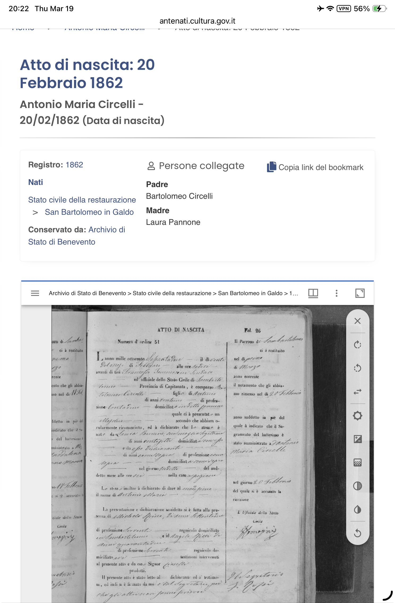
Atto di Nascita (Birth Record) — Antonio Maria Circelli, born February 20, 1862, in San Bartolomeo in Galdo. Parents: Bartolomeo Circelli and Laura Pannone. A different Circelli branch from Maria Donata's line.
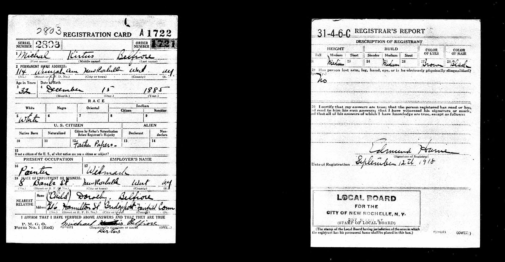
Michael Kirtus Belfiore's WWI Draft Registration Card, September 12, 1918. Shows his middle name "Kirtus," his address at 114 Murray Avenue, and his daughter "(Child) Dorothy Belfiore" at 216 Hamilton Street, Bridgeport, CT.
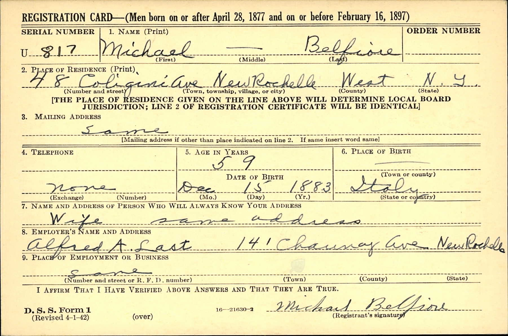
Michael Belfiore's WWII Draft Registration Card, 1942. Shows birth date as December 15, 1883 (two years earlier than the 1918 card), address at 48 Coligni Avenue, and employer Alfred A. Last.
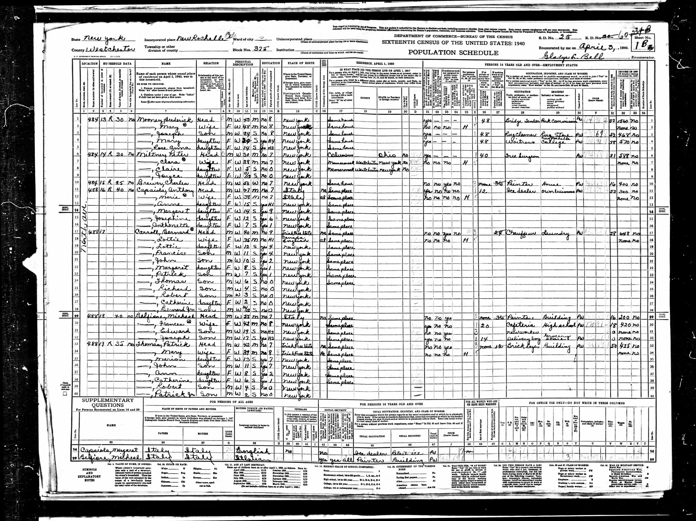
1940 U.S. Census, New Rochelle, Westchester County, NY — Line 29: Belfiore, Michael (head, age 55, painter). Shows Frances (wife), Edward (son), and Joseph (son) in the household.
Documents Ordered (Pending Receipt)
Frances T. Belfiore Death Certificate
Status: ORDERED — NY State Dept of Health. DOD: April 5, 1967. City: New Rochelle. DOB: September 17, 1897. Why it matters: Will reveal her parents' names and birthplaces (Ireland vs. US), potentially opening a second ancestral line back to County Mayo/Roscommon.
"Anthony Belfiore" Death Certificate
Status: IDENTIFIED, NOT YET ORDERED — NY State Dept of Health. DOD: July 11, 1938. Certificate #42184. City: New Rochelle. Why it matters: Now that the marriage record reveals the patriarch's name was Leonardantonio (not Anthony), this death certificate may list him under any variant — "Leonardantonio," "Leonard Antonio," or simply "Anthony." It would reveal age at death, cause, burial location, and the informant. Important caveat: If Leonardantonio died in Italy before 1896, then this 1938 Anthony Belfiore may be a different family member entirely. The 1900 census is the key to resolving this.
All Known Vital Records
| Person | Event | Date | Location | Status |
|---|---|---|---|---|
| Leonardantonio & Maria Donata | Marriage | Jan 27, 1884 | San Bartolomeo in Galdo | In Hand |
| Michael Kirtus Belfiore | Death | Jan 16, 1952 | New Rochelle Hospital | In Hand |
| Michael Kirtus Belfiore | WWI Draft Card | Sep 12, 1918 | New Rochelle, NY | In Hand |
| Michael Belfiore | WWII Draft Card | 1942 | New Rochelle, NY | In Hand |
| "Anthony Belfiore" | Death | Jul 11, 1938 | New Rochelle, NY | Cert #42184 — May be Leonardantonio |
| Frances T. Belfiore | Death | Apr 5, 1967 | New Rochelle, NY | Ordered |
| Maria Doreta Circelli | Death | Unknown | Unknown | Not Found |
| Frank Belfiore | Death | Apr 21, 1968 | Daytona Beach, FL | Confirmed |
| Sammy Belfore | Death | February 16, 1972 | Daytona Beach, FL | Confirmed via Obituary |
| Joseph Belfiore (grandfather) | Death | ~Apr 1986 | West Babylon, NY | SSDI Confirmed |
| Maria Doreta Circelli | Immigration | Dec 2, 1896 | Ellis Island, NY (SS Oregon) | Confirmed |
| Michael Belfiore | Burial | Jan 19, 1952 | Holy Sepulchre Cemetery | Confirmed |
| Patricia Hupp Fleming | Death | Jan 1, 2022 | Birmingham, MI | Confirmed (Find a Grave) |
| Samuel A. Belfore Jr. | Death | ~2024/2025 | Ormond Beach, FL | Reported |
| Sammy Belfore Sr. | PGA Tour Win | ~1930s | Unknown venue | PGA Profile Confirmed |
Census Records to Search
Federal and state census records are the fastest way to fill gaps in the family timeline. The most important is the 1900 U.S. Federal Census, which asked every immigrant their year of immigration. Finding the Anthony Belfiore household in New Rochelle on this census would reveal the exact arrival years for Anthony, Maria, and Michael, plus all children and their ages at the time.
1900 U.S. Federal Census (HIGHEST PRIORITY)
The most important single action remaining. Search for any Belfiore household in New Rochelle, Westchester County, NY. Would show whether Leonardantonio was present, year of immigration for every household member, all children with ages, and exact birth years. If Leonardantonio appears, the entire immigration narrative changes. If only Maria and Michael appear, it confirms the widow hypothesis. Available on Ancestry.com and FamilySearch.org.
1905 & 1915 NY State Census
Mid-decade snapshots of the household as it grew. Would show children born between federal censuses.
1910 U.S. Federal Census
Would show citizenship status (alien / first papers / naturalized) for Anthony and Maria. Crucial for Italian citizenship research.
1920 U.S. Federal Census
Would show year of naturalization. The family would have been in New Rochelle for over 25 years by this point.
1930 U.S. Federal Census
Full household with all children's ages — would resolve any remaining birth order questions.
1940 U.S. Federal Census
Already partially searched. Lena Belfiore confirmed in New Rochelle Ward 1, parents Antonio Belfiore and Maria D. Circelli. Free on Ancestry.com.
Update (2026): The 1940 census does not record parents' names, so the Lena Belfiore record with parents Antonio Belfiore and Maria D. Circelli cannot be the 1940 census as described. The record behind that index entry still needs to be identified.
Italian Citizenship — Current Legal Landscape
Law 74/2025 (the "Tajani Decree") was enacted May 24, 2025 and upheld by the Constitutional Court on March 12, 2026. It limits jure sanguinis Italian citizenship to parent or grandparent born in Italy (2-generation cap). Applications filed before March 27, 2025 are processed under old rules. Seb did not file before the cutoff.
Seb is 4 generations removed from the Italian-born ancestor (Michael). The standard jure sanguinis route is closed under current law.
Pathway 1: 2-Year Italian Residency (Best Option)
Any person of Italian descent can apply for citizenship after 2 years of continuous legal residence in Italy. No generational limit. Requires: proof of Italian ancestry, B1 Italian language, clean criminal record, sufficient income. Any valid residence permit counts (work visa, study visa, elective residence visa). This pathway is completely unaffected by Law 74/2025.
Pathway 2: 1948 Rule (Maternal Line)
Does NOT apply to Seb directly (the Italian line is all male: Anthony → Michael). But could apply to descendants of Michael's sisters if they had children before 1948. Handled through Italian courts, unaffected by Law 74/2025.
Pathway 3: Monitor Upcoming Court Hearings
April 14, 2026: Supreme Court (Sezioni Unite) hearing. June 9, 2026: Tribunal of Mantova referral — different constitutional challenge to Law 74/2025. The legal landscape may shift.
Irish Citizenship — The Frances Towey Connection
Frances Towey is Seb's great-grandmother. Irish citizenship by descent through great-grandparents requires each generation to have maintained the chain by registering as Irish citizens before the birth of the next generation. No indication that Joseph or Robert ever claimed Irish citizenship — the chain is almost certainly broken.
However: If Robert registers NOW on the Irish Foreign Births Register (assuming Frances was Irish-born), it could preserve the chain for Enzo. Frances's death certificate (ordered) will confirm whether she was born in Ireland or the US.
Research and Records, November 2026
This section carries the whole of the November 2026 research: every record image, every source the site uses, every open question and conflict, and the research ledger with the evidence for each finding. Family stories stay on the other pages as family tradition; here is the paper trail beside them. Statuses: confirmed (an original record says it), probable (the records agree but one link is inferred), lead (worth checking, not proven), conflict (records disagree; both readings are kept).
The record images
Italian civil records (San Bartolomeo in Galdo)
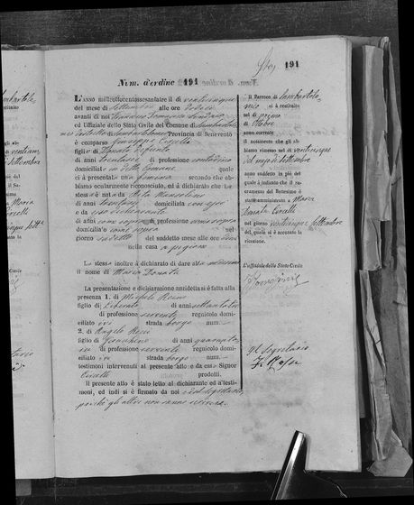
Maria Donata Circelli's birth act: 25 September 1863, San Bartolomeo in Galdo, act 191. Her father Giuseppe presented her; her mother was Rita Mansolino. Archivio di Stato di Benevento, Stato civile italiano, San Bartolomeo in Galdo, Nati 1863, act 191, image 193 (ark:/12657/an_ua1010522).
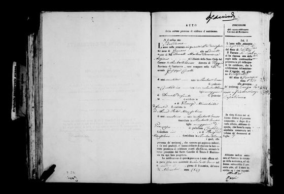
The marriage promise of Giuseppe Circelli and Anna Rita Mansolino, 17 January 1850: the oldest family record yet found. Archivio di Stato di Foggia, Sezione di Lucera, San Bartolomeo in Galdo, Matrimoni 1850, act 1, image 2 (ark:/12657/an_ua36035159).
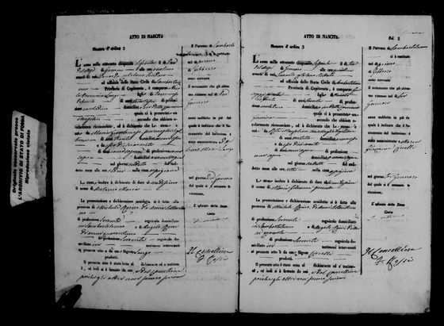
Birth of Maria Filomena Circelli, a twin, 3 January 1860. Archivio di Stato di Foggia, Sezione di Lucera, San Bartolomeo in Galdo, Nati 1860 (Registro 1205), act 3, image 13 (ark:/12657/an_ua36035574).

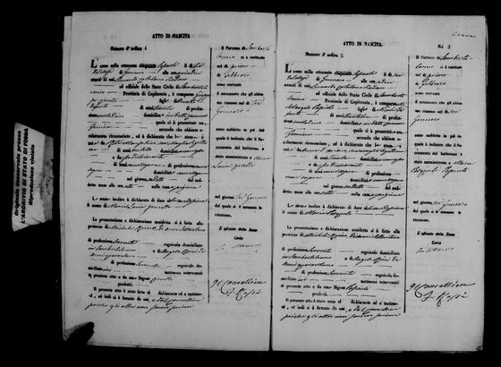
Birth of Maria Lucia Circelli, the second twin, 3 January 1860. Same register, act 4, image 14.
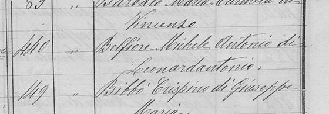
The 1884 birth index: "Belfiore Michele Antonio, di Leonardantonio", act 440. Archivio di Stato di Benevento, San Bartolomeo in Galdo, Nati 1884, annual index, image 319 (ark:/12657/an_ua2585221).
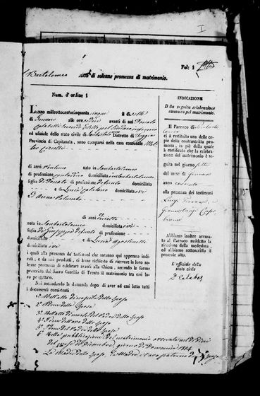
Marriage promise of Matteo Circelli, son of the late Donato, and Anna Palumbo, 7 January 1855. Archivio di Stato di Foggia, Sezione di Lucera, San Bartolomeo in Galdo, Matrimoni 1855 (Registro 1216), act 1, image 5 (ark:/12657/an_ua36035164).
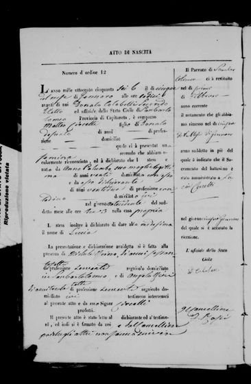
Birth of Lucia Circelli, daughter of Matteo, 4 January 1856. Archivio di Stato di Foggia, Sezione di Lucera, San Bartolomeo in Galdo, Nati 1856, act 12, image 19 (ark:/12657/an_ua36044504).

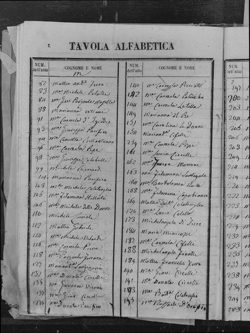
The 1863 alphabetical table (letter M) that led to Maria Donata's birth act, number 191. Archivio di Stato di Benevento, San Bartolomeo in Galdo, Nati 1863, Tavola alfabetica, image 290 (ark:/12657/an_ua1010522).
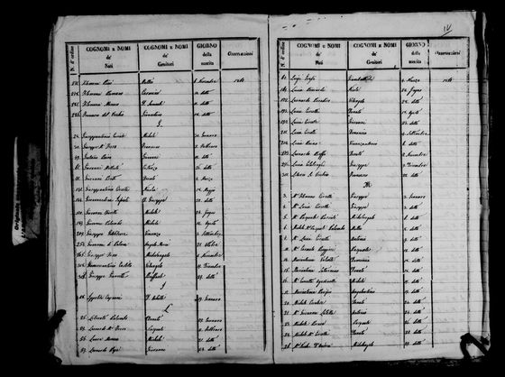
The 1860 birth index, letters L and M, searched for the foundling Leonardantonio: he is not there. Archivio di Stato di Foggia, Sezione di Lucera, San Bartolomeo in Galdo, Nati 1860 (Registro 1205), index image 5 (ark:/12657/an_ua36035574).

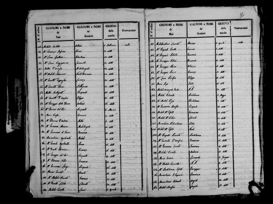
The 1860 index page where foundlings are listed with parents "N. N." (no Leonardantonio). The 1861 register is not online. Same register, index image 6.

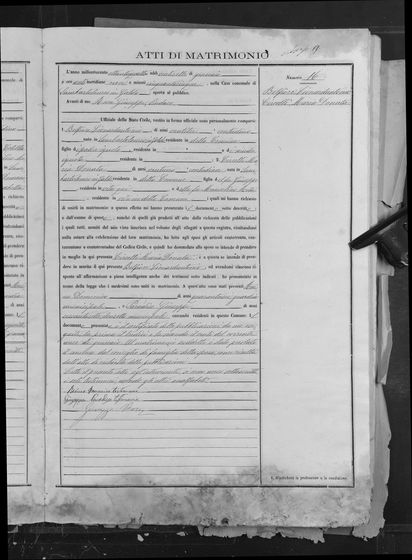
The full register page of the 1884 marriage, act 16: "Belfiore Lionardantonio", 23, padre ignoto, madre ignota, and Maria Donata Circelli, 21, 27 January 1884. Archivio di Stato di Benevento, San Bartolomeo in Galdo, Matrimoni 1884, image 17, act 16 (ark:/12657/an_ua2575113).

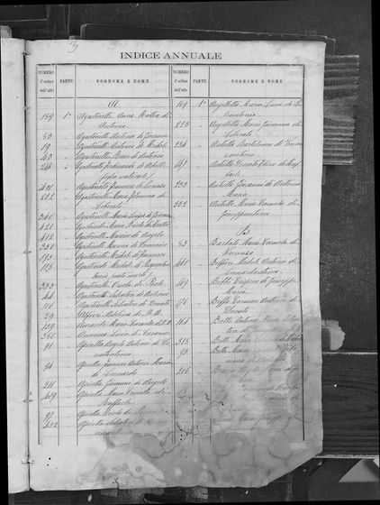
The whole 1884 birth index page with "Belfiore Michele Antonio, di Leonardantonio", act 440. Archivio di Stato di Benevento, San Bartolomeo in Galdo, Nati 1884, index image 319 (ark:/12657/an_ua2585221).
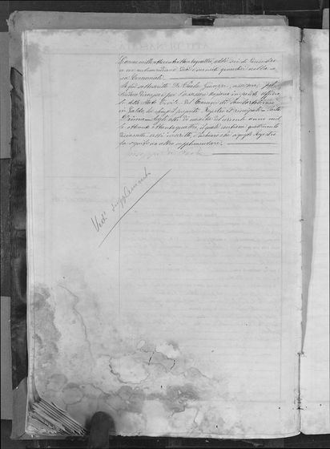
The note closing the principal 1884 births register on 6 December 1884 with 417 acts; act 440 (Michele Antonio) was written after it, in a supplementary register. Same register, image 314.

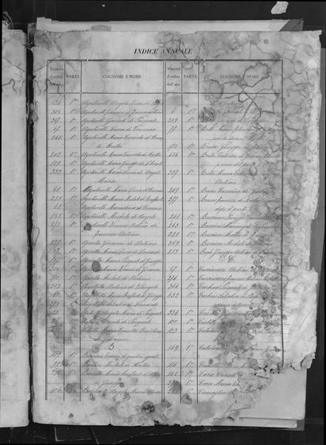
The 1883 birth index, letter B: no Belfiore. Archivio di Stato di Benevento, San Bartolomeo in Galdo, Nati 1883, index image 309 (ark:/12657/an_ua2583974).
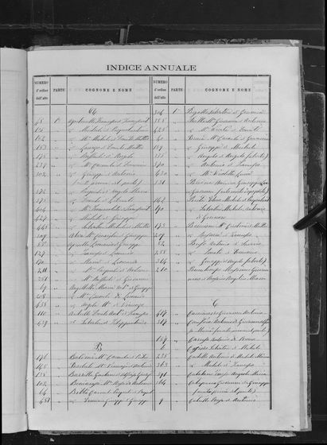
The 1885 birth index, letter B: no Belfiore. Archivio di Stato di Benevento, San Bartolomeo in Galdo, Nati 1885, index image 314 (ark:/12657/an_ua2586327).

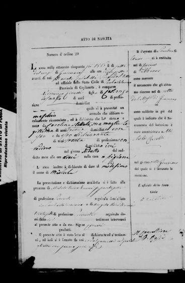
Birth of Michele Circelli, son of Vincenzo, 7 January 1856: possibly the "Circolo Michele" who sailed beside Leonardantonio in 1890 (a lead). Archivio di Stato di Foggia, Sezione di Lucera, San Bartolomeo in Galdo, Nati 1856, act 20, image 23 (ark:/12657/an_ua36044504).

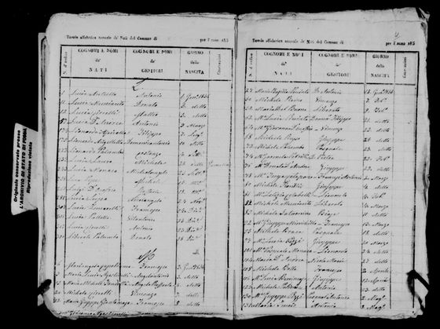
The 1856 birth index, letters L and M. Same register, index image 6.
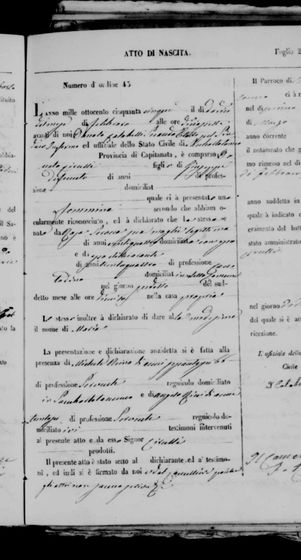
1855, act 45: a Cirelli child of Donato, son of the late Giuseppe, and Rosa Serocca (reading uncertain). A different family line, kept to show it was checked. Archivio di Stato di Foggia, Sezione di Lucera, San Bartolomeo in Galdo, Nati 1855, act 45, image 33.
Ship lists
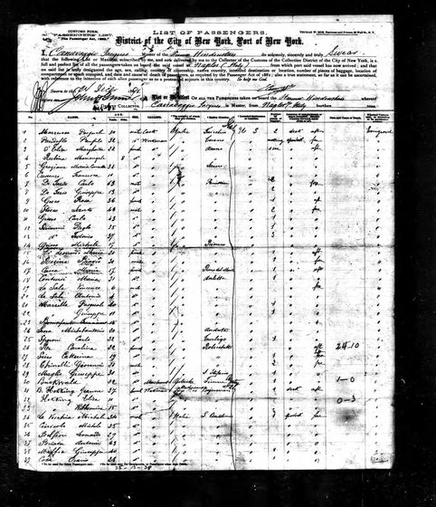
SS Hindoustan, Naples to New York, arrived 24 December 1890: "Belfiori Leonardo", 29, line 36. NARA M237, roll 560; Ancestry.com New York Passenger Lists, record 8292809, image NYM237_560-0318.
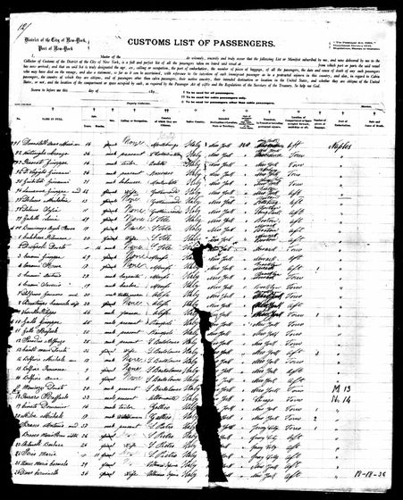
SS Oregon, arrived New York 2 December 1896: Maria Doreta Circelli, 34, with Michele, 12, Francesca (Filomena), 9, and Anna (Mary), 6. NARA M237, roll 669; Ancestry.com collection 7488, record 4002498358, image NYM237_669-0064.

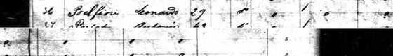
Close-up of line 36 of the Hindoustan list, "Belfiori Leonardo", 29, with "Circolo Michele", 35, on line 35 (the long line is shown in two halves). NARA M237, roll 560; Ancestry image NYM237_560-0318.
Unresolved conflict: the 1909 Duca di Genova list
Unresolved conflict. An Antonio Belfiore of San Bartolomeo came back through New York in October 1909 as a US citizen, leaving a wife in San Bartolomeo and heading, the index says, for Cleveland. Our Antonio's wife and children were all in New Rochelle by 1900 and he kept a saloon on Brook Street in 1910, so this is probably a different man. Nothing on these pages proves it either way; his naturalization papers would settle it.

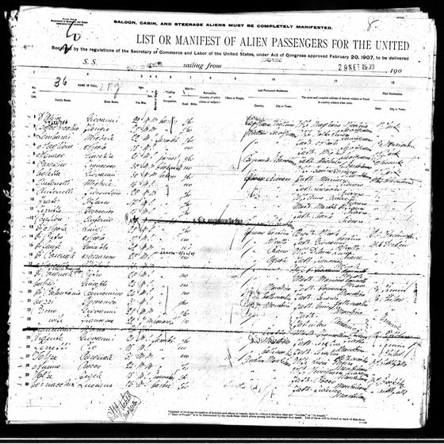
UNRESOLVED CONFLICT. SS Duca di Genova, arrived New York 11 October 1909, List 36, line 12: "Belfiore Antonio" of S. Bartolomeo, struck through and stamped "U.S.C. DISCHARGED ON PIER" (a returning US citizen). His wife was left in San Bartolomeo and the index gives Cleveland, Ohio, as his destination. Our Antonio's wife and children were all in New Rochelle by then, so this is probably another man; not proven. NARA T715, roll 1352; Ancestry.com collection 7488, record 4005267966, image NYT715_1352-0340.

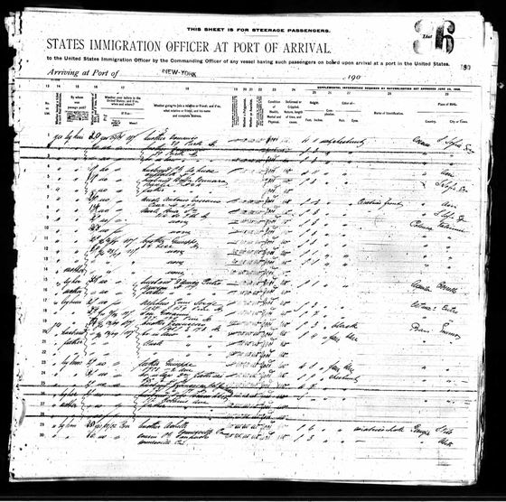
UNRESOLVED CONFLICT. The second page of the same 1909 list (columns 13 onward): on line 12 the relationship "wife" is readable; her name is under the stroke. Same, image NYT715_1352-0373.

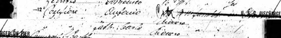
UNRESOLVED CONFLICT. Close-up of line 12 on page 1 of the 1909 list (shown in two halves). Same, image NYT715_1352-0340.

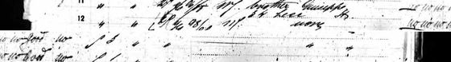
UNRESOLVED CONFLICT. Close-up of line 12 on page 2 of the 1909 list (shown in two halves). Same, image NYT715_1352-0373.
The New Rochelle household, census by census
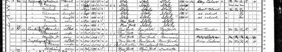
The family at 13 Lawton Street, New Rochelle, June 1900: Antonio, Mary, Michael, Filomena, Mary, Frank and Samuel. 1900 U.S. census, New Rochelle Ward 1, ED 93, sheet 6A; NARA T623 roll 1176; Ancestry 7602, record 49930098, image 4114939_00231.
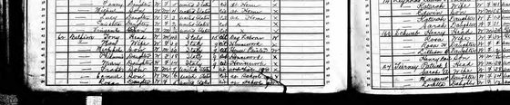
The 1905 state census, house 62 (the street reads like Cottage Place): Tony, Mary, Michele, Philmenia, Mary, Frank, Samuel and Rose. 1905 New York State census, New Rochelle Ward 3, ED 1, p. 2; Ancestry 7364, record 3992024, image 004296242_00127.
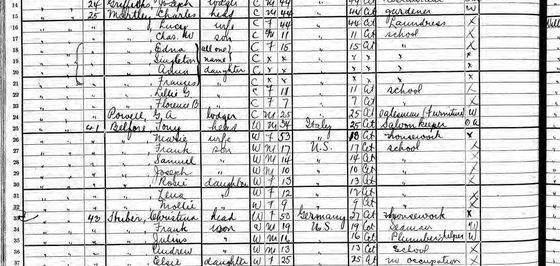
The 1915 state census, 41 Brook Street, written Belfore: Tony the saloon keeper, Marie and the children. 1915 New York State census, New Rochelle Ward 3, AD 2, ED 3, p. 16; Ancestry 2703, record 13378688, image 32848_B094139-00039.
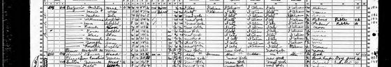
January 1920, 54 Brook Street, indexed Befusio: the whole family at home, with a niece, Margrett M. Elmer. 1920 U.S. census, New Rochelle Ward 3, ED 132, sheet 10B; NARA T625 roll 1278; Ancestry 6061, record 87616716, image 4442108_00358.
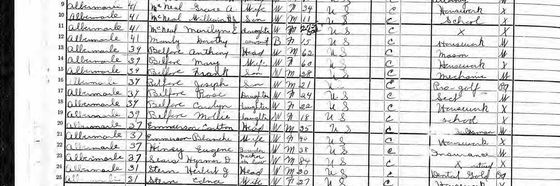
1925, 39 Albemarle: Anthony the mason, Mary, Frank, Joseph ("pro golf"), Rose, Carolyn and Mollie. 1925 New York State census, New Rochelle Ward 3, AD 1, ED 2, p. 26; Ancestry 2704, record 16940211, image 32849_b094372-00169.
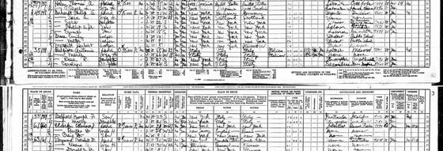
1930, 55 Potter Avenue, their own house (valued at $35,000): Antonio, Marie, Rose, Carolyn, Joseph F. and Molly (sheets 8A and 8B joined). 1930 U.S. census, New Rochelle, ED 60-263, sheets 8A and 8B; Ancestry 6224, record 46965522, images 4638877_00648 and 00649 (FHL 2341397).

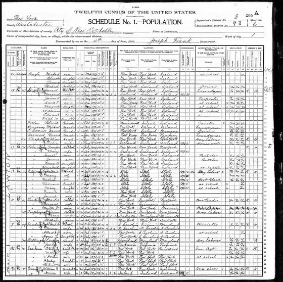
The full 1900 census page: the family at 13 Lawton Street, lines 25 to 31. 1900 U.S. census, New Rochelle Ward 1, ED 93, sheet 6A; NARA T623 roll 1176; Ancestry 7602, record 49930098, image 4114939_00231.

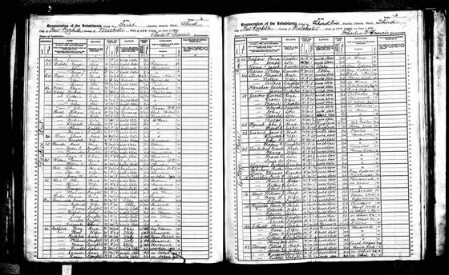
The full 1905 state census page, house 62, lines 43 to 50. 1905 New York State census, New Rochelle Ward 3, AD 1, ED 1, p. 2; Ancestry 7364, record 3992024, image 004296242_00127.
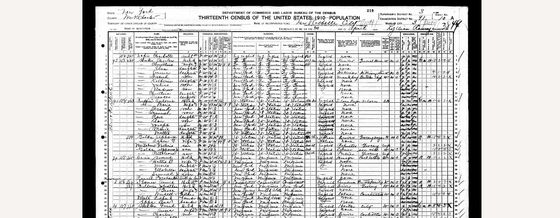
1910, 41 Brook Street, indexed Buffin: Antonio the saloon keeper, owner of the house; Marie, mother of nine children, all nine living; Frank, Samuel, Rose, "Leon" (Lena), Joseph, Marie (Mollie) and Mattie (very likely Mary). 1910 U.S. census, New Rochelle Ward 3, ED 91, sheet 10A, lines 12 to 20; NARA T624 roll 1091; Ancestry 7884, record 20230196, image 4449910_01018. This copy is a capture of the Ancestry image viewer, so it is lower in resolution than the other census images; use it as a research copy.

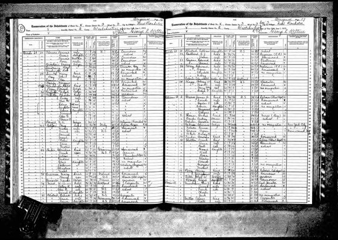
The full 1915 state census page, Brook Street, lines 25 to 32. 1915 New York State census, New Rochelle Ward 3, AD 2, ED 3, p. 16; Ancestry 2703, record 13378688, image 32848_B094139-00039.

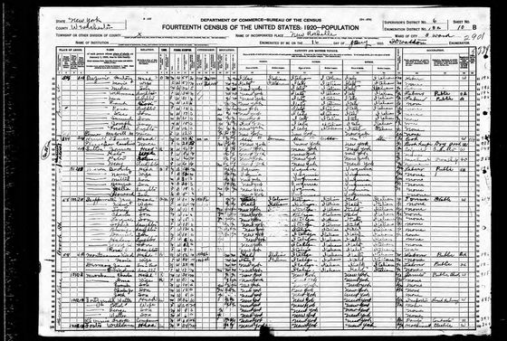
The full 1920 census page, 54 Brook Street, lines 51 to 62. 1920 U.S. census, New Rochelle Ward 3, ED 132, sheet 10B; NARA T625 roll 1278; Ancestry 6061, record 87616716, image 4442108_00358.

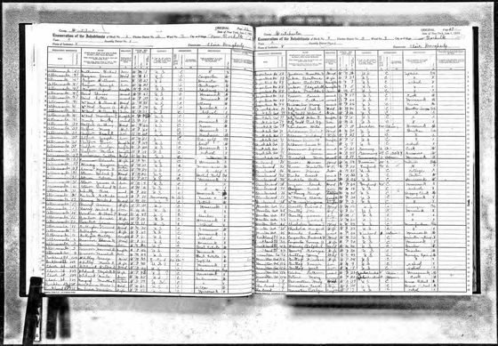
The full 1925 state census page, 39 Albemarle, lines 13 to 19. 1925 New York State census, New Rochelle Ward 3, AD 1, ED 2, p. 26; Ancestry 2704, record 16940211, image 32849_b094372-00169.

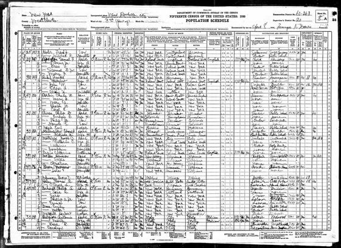
The full 1930 census sheet 8A, 55 Potter Avenue, lines 46 to 49. 1930 U.S. census, New Rochelle, ED 60-263, sheet 8A; Ancestry 6224, record 46965522, image 4638877_00648 (FHL 2341397).

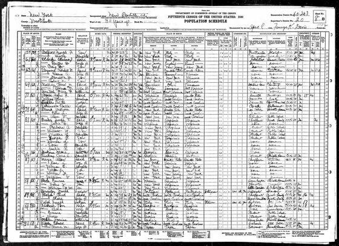
The full 1930 census sheet 8B, lines 51 and 52, where the household continues. Same, sheet 8B, image 4638877_00649.
The branches: Towey, Elmer, Paternostro, D'Onofrio and Michael's household
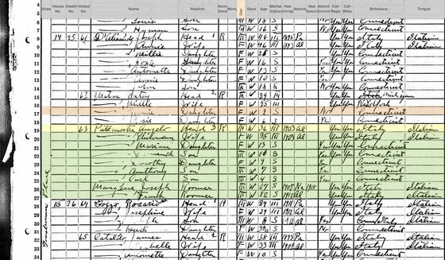
Phyl and Angelo Paternostro's family on Goodman Place, Hartford, January 1920: Marian, Dominick, Dorothy, Anthony and Carl. 1920 U.S. census, Hartford Ward 2, ED 56, sheet 4A, lines 19 to 27; NARA T625 roll 182; Ancestry 6061, record 72141286, image 4294452-00749.
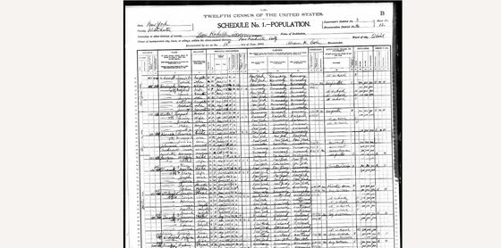
1900, 200 Horton Avenue, New Rochelle (indexed Lowey): James and Margaret Towey with Frances, aged 2, baby James and a niece, Nellie Kelly. 1900 U.S. census, New Rochelle Ward 3, ED 96, sheet 12B; NARA T623 roll 1176; Ancestry 7602, image 4114939_00382. This copy is a capture of the Ancestry image viewer, so it is lower in resolution than the other census images; use it as a research copy.
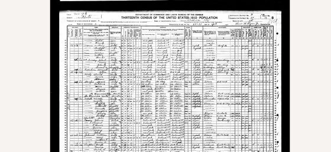
1910, 47 Oak Street, New Rochelle: James Towey, machine-shop laborer, Margaret, Fannie (Frances), James, Mary and John. 1910 U.S. census, New Rochelle Ward 1, ED 81, sheet 11B; NARA T624 roll 1091; Ancestry 7884, record 20223753, image 4449910_00671. This copy is a capture of the Ancestry image viewer, so it is lower in resolution than the other census images; use it as a research copy.
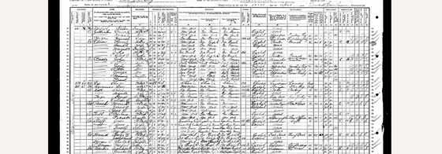
1910, Melrose Avenue, the Bronx: Thomas J. and Annie A. Elmer with Margaret M., 2, who appears as a "niece" in the Belfiore house in 1920. 1910 U.S. census, Bronx AD 33, ED 1509, sheet 10B; NARA T624 roll 999; Ancestry 7884, image 4449352_00964. This copy is a capture of the Ancestry image viewer, so it is lower in resolution than the other census images; use it as a research copy.
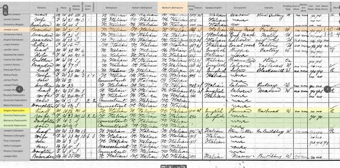
1910, 35 Hallett Street, Bridgeport: Angelo Paternostro, railroad foreman, Filomina (Phyl), Marianna, 3, and baby Domenik (highlighted rows). 1910 U.S. census, Bridgeport, ED 50, sheet 5A; NARA T624 roll 129; Ancestry 7884, record 2309716, image 31111_4327332-00536. This copy is a capture of the Ancestry image viewer, so it is lower in resolution than the other census images; use it as a research copy.
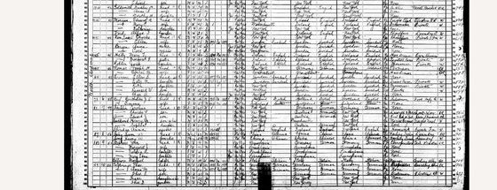
1920, North Avenue, New Rochelle: Michael Belfiore, 34, a widower lodging with John and Margaret J. Stephens, manager of a bowling alley. 1920 U.S. census, New Rochelle Ward 3, ED 124, sheet 2B; NARA T625 roll 1278; Ancestry 6061, image 4442108_00162. This copy is a capture of the Ancestry image viewer, so it is lower in resolution than the other census images; use it as a research copy.
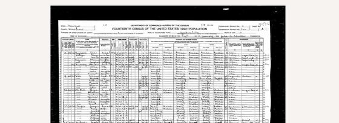
1920, 23 Lockwood Avenue, Yonkers: Joseph and Mary D'Onofrio, Leonard, Angelina, Donald, baby "Anthony" (Francis) and Joseph's brother Anthony. 1920 U.S. census, Yonkers Ward 10, ED 266, sheet 7A; NARA T625 roll 1281; Ancestry 6061, record 87669524, image 4442111_00357. This copy is a capture of the Ancestry image viewer, so it is lower in resolution than the other census images; use it as a research copy.
1930, 397 Woodland Street, Hartford: Angelo (a building foreman, home owned), Philomena, Dominick F., Dorothy L., Anthony A. and Carl A. 1930 U.S. census, Hartford, ED 73, sheet 11B; Ancestry 6224, record 9625424, image 4531869_00619. This copy is a capture of the Ancestry image viewer, so it is lower in resolution than the other census images; use it as a research copy.
1930, 52 Brook Street, New Rochelle: Micheal, a house painter, Frances, Dorothy, 17, a manicurist, Edward and Joseph. 1930 U.S. census, New Rochelle, ED 60-273, sheet 10A, lines 34 to 38; Ancestry 6224, image 4638877_01006. This copy is a capture of the Ancestry image viewer, so it is lower in resolution than the other census images; use it as a research copy.
1930, 91 Buckingham Road, Yonkers: Joseph D'Onofrio, nurseryman on his own account, Mary, Leonard, Angela, Donald, Francis and Raymond. 1930 U.S. census, Yonkers, ED 382, sheet 16A; Ancestry 6224, record 47242603, image 4638883_00095. This copy is a capture of the Ancestry image viewer, so it is lower in resolution than the other census images; use it as a research copy.
1940, 397 Woodland Street, Hartford: Angelo, Philomine, Dorothy and a son indexed Albert (highlighted rows at the foot of the page). 1940 U.S. census, Hartford, ED 10-145, sheet 9A; NARA T627 roll 537; Ancestry 2442, record 129994371, image m-t0627-00537-00925. This copy is a capture of the Ancestry image viewer, so it is lower in resolution than the other census images; use it as a research copy.
The 1950 census
April 1950, New Rochelle: Rose, head, a secretary, and her sister Carolyn. 1950 U.S. census, New Rochelle, ED 67-39, sheet 72.
April 1950, New Rochelle: Frances M., a school food handler, Michael C., 65, born in Italy, and Edward J., 29. 1950 U.S. census, New Rochelle, ED 67-66, sheet 12 (indexed Belfiory).
April 1950, New Rochelle: Joseph C., 27, field mechanic for a lighting company, and Dorothy H., 28. (The next line, their young son, is living and is cropped off.) 1950 U.S. census, New Rochelle, ED 67-67, sheet 21 (indexed Belfire).

The next house in April 1950: John J. Towey, 41, a lineman for a lighting company, and Ida, 37, born in Connecticut. John was very probably Frances Towey's youngest brother. (Their children's lines are cropped off.) 1950 U.S. census, New Rochelle, ED 67-67, sheet 21.
April 1950, Daytona Beach: Samuel Belfore, 52, proprietor of a cocktail lounge, and Louisa, 33 (the bottom of the strip is cut in the source image). 1950 U.S. census, Volusia County, Florida, ED 64-22A, sheet 73.
April 1950, Grosse Pointe Woods, house number 276: Beulah M. Burdick (mother-in-law), Joseph F. Belfore, 46, and Ruth. (The sons' lines are cropped off.) 1950 U.S. census, Wayne County, Michigan, ED 82-129, sheet 77.
Draft cards
Sammy's World War I draft card, September 1918: 41 Brook, New Rochelle; golf instructor, employer Alex Smith, Wykagyl; nearest relative his father Tony, at the same address. NARA M1509, WWI Selective Service registration cards; Ancestry 6482, record 15495635, image 005262639_03828.
Sammy's 1942 draft card: 1517 South Atlantic Avenue, Daytona Beach; born 25 December 1898; working at the Shenecossett Country Club, New London; contact Mrs. Virginia H. Belfore, 251 West Maple Avenue, Birmingham, Michigan. NARA, WWII draft registration cards; Ancestry 2238, record 12440928, image 44005_05_00005-01022.

Back of Sammy's 1942 card: 5 feet 3, brown eyes, black hair, a mole under his left eye. Same, image 44005_05_00005-01023.
Joe's draft card: Joseph Francis Belfore, 276 Merriweather, Grosse Pointe Farms, telephone Niagara 3226; born 5 February 1904, New Rochelle; Country Club of Detroit, 330 Country Club Drive; contact Miss Rose Belfore, Wykagyl Gardens Apartments, New Rochelle. NARA, WWII draft registration cards; Ancestry 2238, record 267355465, image 44017_01_00005-00407.

Frank's 1942 draft card: 1200 Grayton, Grosse Pointe Park; born 31 October 1897, New Rochelle; work on Kercheval near Conner, Detroit; contact his brother Joseph, Merriweather, Grosse Pointe Farms. NARA, WWII draft registration cards; Ancestry 2238, record 267355439, image 44017_01_00005-00355.

Back of Frank's card: 5 feet 4, brown eyes, gray hair, ruddy complexion. Same, image 44017_01_00005-00356.

Michael's 1942 draft card (Fourth Registration), from Ancestry: 48 Coligni Avenue, New Rochelle; born 15 December 1883; employer Alfred A. Last, 141 Chauncey Avenue. NARA, WWII Fourth Registration cards; Ancestry.com. Serial U 817.
Marriage and death indexes
New York State death index, 1937: Belfiore, Marie D., 26 September, New Rochelle, certificate 56678. New York State Department of Health, Death Index 1937, image n74; Reclaim The Records, archive.org item New_York_State_Death_Index_1937.
New York State marriage index, 1906: Filomina Belfiore and Angelo Paternoster, 20 January, New Rochelle, both certificate 1348. New York State Marriage Index 1906, images n65 and n781; Reclaim The Records, archive.org item New_York_State_Marriage_Index_1906 (also Ancestry 61632, record 6015119, image 48576_556178-00065).
New York State marriage index, 1911: Maria Belfiore and Guiseppe Donofrio, 10 December, New Rochelle, certificate 44565. New York State Marriage Index; Ancestry 61632, record 6508242, image 48576_556129-00047.
New Jersey death index, 1994: Joseph C. Belfiore, 19 October, Princeton, age 71. The Social Security number column on this page has been covered before publishing. New Jersey State Archives, New Jersey Death Indexes 1904 to 2000; Ancestry 61260, record 4228763, image death_index_1994_a-f-00071.

Ancestry's copy of the 1906 marriage index page: Filomina Belfiore, 20 January 1906, New Rochelle, certificate 1348. New York State Marriage Index; Ancestry.com collection 61632, record 6015119, image 48576_556178-00065.

New York State death index, 1938: Belfiore, Anthony, 11 July, New Rochelle, certificate 42184 (probably Leonardantonio; not yet proven). New York State Death Index 1938, page 69; Reclaim The Records, archive.org item New_York_State_Death_Index_1938.
New York State death index, 1952: Belfiore, Michael, New Rochelle, age 66, 16 January, certificate 6429. New York State Death Index 1952, page 92; Reclaim The Records, archive.org item New_York_State_Death_Index_1952.
Golf history
Golfdom, January 1964: Herb Graffis remembers Joe Belfore. Golfdom, Jan 1964, p. 3; Michigan State University Turfgrass Information Center, https://archive.lib.msu.edu/tic/golfd/article/1964jan3.pdf
Golfdom, April 1941: "The Joe Belfores ... are admiring baby boys." Golfdom, Apr 1941, p. 2; MSU Turfgrass Information Center, https://archive.lib.msu.edu/tic/golfd/article/1941apr2.pdf

Golfdom, January 1934: at Al Watrous's day at Oakland Hills, October 1933, Joe Belfore of Detroit CC partnered Watrous against Horton Smith and Frank Walsh, and spoke at the dinner. Golfdom, Jan 1934, p. 9; https://archive.lib.msu.edu/tic/golfd/article/1934jan9.pdf
Golfdom, January 1960: "Michigan, Joe Belfore, Country Club of Detroit" among the nominees for national Golf Professional of the Year. Golfdom, Jan 1960, pp. 71 to 80 (page 2 of the PDF); https://archive.lib.msu.edu/tic/golfd/article/1960jan71-80.pdf
Golfdom, June 1960: "Belfore Addresses Michigan Publinx": a lesson and clinic for 300 public-course golfers. Golfdom, Jun 1960, p. 70; https://archive.lib.msu.edu/tic/golfd/article/1960jun70.pdf
Yearbook
Mollie's page in The Rochellean, New Rochelle High School yearbook, 1926 (small preview). The Rochellean 1926, p. 21; scan hosted by e-yearbook.com.
Places
San Bartolomeo in Galdo today: the main street and the bell tower of the Chiesa Madre. Photo: michele carbone, 2019, Wikimedia Commons, https://commons.wikimedia.org/wiki/File:San_Bartolomeo_in_Galdo.jpg Credit: Public domain (as marked by the author).
The Chiesa Madre of San Bartolomeo in Galdo. Photo: Claudio Grumiro, 2013, Wikimedia Commons, https://commons.wikimedia.org/wiki/File:Chiesa_Madre_San_Bartolomeo_in_Galdo.jpg Credit: CC BY-SA 3.0, https://creativecommons.org/licenses/by-sa/3.0/ : show the author and licence link next to the image.
The Chiesa dell'Annunziata, San Bartolomeo in Galdo. Photo: Pere Garcia, 2024, Wikimedia Commons, https://commons.wikimedia.org/wiki/File:Pgr_San_Bartolomeo_in_Galdo_-_Chiesa_dell%27Annunziata_o6o_1.jpg Credit: CC0 (no rights reserved); credit appreciated.
Holy Sepulchre Cemetery, New Rochelle. Photo: Anthony22, 2009, Wikimedia Commons, https://commons.wikimedia.org/wiki/File:Holy_Sepulchre_Cemetery_Main_Entrance.JPG Credit: CC BY-SA 3.0, https://creativecommons.org/licenses/by-sa/3.0/ : show the author and licence link.
The Country Club of Detroit, Joe's club for thirty-two years (modern view). Photo: Hu12, 2012, Wikimedia Commons, https://commons.wikimedia.org/wiki/File:CCOFD.JPG Credit: CC BY-SA 3.0, https://creativecommons.org/licenses/by-sa/3.0/ : show the author and licence link.
An old lane by the convent, San Bartolomeo in Galdo. Photo: Claudio Grumiro, 2012, Wikimedia Commons, https://commons.wikimedia.org/wiki/File:Vicolo_Convento_San_Bartolomeo_in_Galdo.jpg Credit: CC BY-SA 3.0, https://creativecommons.org/licenses/by-sa/3.0/ : show the author and licence link.
Where San Bartolomeo in Galdo lies in the province of Benevento (Campania). Map: Vonvikken, 2012, Wikimedia Commons, https://commons.wikimedia.org/wiki/File:Map_of_comune_of_San_Bartolomeo_in_Galdo_(province_of_Benevento,_region_Campania,_Italy).svg Credit: CC BY-SA 3.0 IT, https://creativecommons.org/licenses/by-sa/3.0/it/deed.en : show the author and licence link.
New Rochelle's draftees arriving at Camp Upton, Yaphank, 1917: the town's young men of Frank's generation. No family member has been identified in the photograph. Photograph by F. M. Stefano, Herald photographer; Library of Congress, LCCN 2016650321; via Wikimedia Commons. Credit: Public domain (Library of Congress, no known restrictions).
Every source on this site
| Source | Type | Date | Where it is held | Copy |
|---|---|---|---|---|
| Atto di matrimonio no. 16: Belfiore Lionardantonio and Circelli Maria Donata Screenshot of the Antenati image, page 17 of 95. Transcription and translation made for this site from the scan. | civil record | 1884-01-27 | Archivio di Stato di Benevento, Stato civile italiano, San Bartolomeo in Galdo, 1884 (via Antenati portal) | image |
| Atto di nascita no. 51: Antonio Maria Circelli Parents Bartolomeo Circelli and Laura Pannone. Not tied to anyone on the tree. | civil record | 1862-02-20 | Archivio di Stato di Benevento, Stato civile della restaurazione, San Bartolomeo in Galdo, 1862 (via Antenati portal) | image |
| Ellis Island passenger record: Circelli, Maria Doreta, SS Oregon Passenger ID 102895011196, frame 62, line 413. Departed Genoa and Naples. Age 34 as recorded in earlier research; the saved screenshot does not show the age. | passenger index | 1896-12-02 | Statue of Liberty-Ellis Island Foundation passenger database | image |
| Customs List of Passengers, Port of New York (page shared as the SS Oregon list) The visible page shows lines 26 to 61. Maria Doreta's line (413 in the index) is not on this page, and the ship's name is not visible. | passenger manifest | 1896 | US Customs passenger lists (copy shared on this site) | image |
| List or Manifest of Alien Immigrants, SS Alsatia, Naples to New York, list 128 Sailed from Naples 26 February 1898. Lines 8 and 9: Circelli Salvatore (28) and Circelli Michele (25). | passenger manifest | 1898-03-19 | US Immigration Service manifests (via Ellis Island Foundation) | image |
| Ellis Island passenger records: Circelli, Salvatore and Circelli, Michele, SS Alsatia Salvatore: passenger ID 602628040030, frame 790, line 8. Michele: passenger ID 602628040031, frame 790, line 9. Text list gives residence as 'S.Dartolomeo in Calor'. Screenshots: images/salvatore-circelli-alsatia-1898-index.png, images/alsatia-1898-passenger-list-text.png. | passenger index | 1898-03-19 | Statue of Liberty-Ellis Island Foundation passenger database | image |
| List or Manifest of Alien Passengers, SS Sant'Anna, sailing from Naples 14 November 1911 Line 20: Circelli Salvatore, 42, married. Final destination New Rochelle, NY. | passenger manifest | 1911-11-14 | US Immigration Service manifests (via Ellis Island Foundation) | image |
| Ellis Island manifest listing 'Belfiore, Antonio' of S. Bartolomeo as a returning US citizen, SS Duca di Genova UNRESOLVED CONFLICT. SS Duca di Genova from Naples (sheet dated 29 Sep 1909), arrived New York 11 Oct 1909. Line 12, "Belfiore Antonio", is struck through and stamped "U.S.C. DISCHARGED ON PIER": he was taken off the alien list as a US citizen. Last residence S. Bartolomeo, Benevento; nearest relative left behind: his wife, at San Bartolomeo in Galdo; final destination (index) Cleveland, Ohio. Age not readable (perhaps 46 or 48). Our Antonio's wife and children were all in New Rochelle by 1900 and he owned a house on Brook Street in 1910, so this is probably a different Antonio Belfiore. Not proven either way. | passenger manifest | 1909 | National Archives microfilm T715, roll 1352 (RG 85), List 36, line 12; Ancestry.com collection 7488, record 4005267966, images NYT715_1352-0340 and 0373 | image online |
| ItalyHeritage.com index of Circelli births, San Bartolomeo in Galdo Lists a Salvatore (1 Jan 1869) and a Michele (12 Mar 1871), sons of Leonardo Circelli and Rosa Pacifico. Cited in the research report; not checked against the original registers. | online index | 1869-1882 | ItalyHeritage.com | |
| World War I draft registration card: Michal Kirtus Belfiore, serial 2803, order 1721 (card A1722) | draft registration | 1918-09-12 | NARA, Selective Service System (WWI), M1509; Local Board for the City of New Rochelle | image |
| World War II draft registration card (Fourth Registration): Michael Belfiore, serial U-817 | draft registration | 1942-04-27 | NARA, Selective Service System, Fourth Registration | image |
| 1940 US Census, New Rochelle, Westchester County, NY, sheet 1B, lines 29 to 32 Household at 488 North Avenue. Enumerated April 3, 1940. | census | 1940-04-03 | US Bureau of the Census, Sixteenth Census (NARA) | image |
| New York State death certificate: Michael K. Belfiore (Dist. No. 5904) The scan is not in this repository. Facts are taken from the transcription. | death record | 1952-01-16 | Family copy (supplied by William Belfiore). Transcribed on this site's Research page | |
| New York State Death Index: Anthony Belfiore, New Rochelle, certificate 42184 Index page 69 (Reclaim The Records scan): Belfiore, Anthony, 11 Jul 1938, New Rochelle, certificate 42184. A second Anthony Belfiore died 15 Sep 1938 in Beacon (certificate 51555); he is not ours. The certificate has not been ordered. | death index | 1938-07-11 | New York State Department of Health index | image online |
| Death index entry: Frances Belfiore, born 17 Sept 1897, died 5 Apr 1967, New Rochelle Her death certificate has been ordered. | death index | 1967-04-05 | Social Security Death Index / NY death index (as transcribed on the Research page) | |
| Social Security Death Index entry: Joseph Belfiore, died April 1986, last residence West Babylon, NY Number issued in Maryland. Not yet confirmed to be Seb's grandfather. | death index | 1986-04 | Social Security Death Index (as transcribed on the Research page) | |
| Indexed record: Frank Belfiore, born November 1897, New Rochelle, parents Antonio Belfiore and Maria D. Circelli The underlying record has not been saved to this repository. | online index | 1897-11 | Ancestry.com (indexed record; record type not identified on this site) | |
| Death record: Frank Belfiore, Daytona Beach, Florida Not saved to this repository. | death index | 1968-04-21 | As recorded in earlier research (Florida death index) | |
| Indexed record: Lena Belfiore, born about 1901, parents Antonio Belfiore and Maria D. Circelli The 1940 census does not record parents' names, so this attribution cannot be right as written. The underlying record needs to be identified. | online index | Described on the Research page as the 1940 census | ||
| 'Sammy Belfore, Last Of 3 Golfing Brothers', The Standard-Star (New Rochelle), Obituary News Undated clipping. Sammy died on February 16, 1972, so the obituary appeared on or just after that date. | newspaper | 1972-02 | Family clipping (supplied by William Belfiore) | image |
| Family photograph: three men on a golf course Believed by the family to show Sammy, Frank and Joe. No one in it has been identified with certainty. | photograph | c. 1930s-1940s | Family collection | image |
| Family knowledge (Seb Belfiore and family) | family tradition | 2026 | Oral and written family information gathered for this project | |
| Correspondence from William Belfiore (Seb's uncle) | family tradition | 2026 | Family correspondence | |
| Handwritten research notes: Seabreeze postcard and Daytona Beach city directory entries Notes a directory entry for 'Sam (Louisa)', golf pro, at 217 Jessamine Blvd, and a 1951 directory entry for Belfore's Sammy 19th Hole, 324 Seabreeze Blvd. | research notes | Seb's research files (Balfiore 1.pdf, page 1) | ||
| From San Bartolomeo in Galdo to New Rochelle (research report) Secondary. Some statements in it are corrected by the primary records (see docs/canvas-audit.md). | research report | 2026 | This repository | image |
| Sammy Belfore, 'Winter Pro Job Is Preview of Season to Come', Golfdom, February 1948, pp. 58-59 | magazine | 1948-02 | Golfdom (Michigan State University Turfgrass Information Center archive) | image |
| Herb Graffis, 'Making the Swing', Golfdom, January 1948 Notes that Sammy Belfore is pro-manager for the winter at Seabreeze GC, Daytona Beach, and that the club reopened after a five-year shutdown. | magazine | 1948-01 | Golfdom (Michigan State University Turfgrass Information Center archive) | image |
| David Ouse, 'Clint Russell' (Zenith City Online) | biography | 2012-2017 | Zenith City Online, 2012-2017 (PDF copy) | image |
| Country Club of Detroit, Minutes of Meeting of the Board of Governors, October 29, 1963 Header page: images/frank-belfore-michigan-golfcourse2.jpg. The file names say Frank, but the minutes concern Joe. | minutes | 1963-10-29 | Country Club of Detroit archives (photographs) | image |
| Joe Belfore, Golfing Aids (Detroit, 1940), signed copy Photographs: images/joe-book-1.jpeg to joe-book-5.jpeg. | book | 1940 | The Golf Auction, from the PGA REACH collection archives | image online |
| Provenance letter for 'Golfing Aids', signed by Bob Denney, PGA of America Historian Emeritus | letter | 2025-02-13 | The Golf Auction / PGA REACH | image |
| Michigan PGA Centennial, 1922-2022 Cited by earlier research for Joe's championships and presidency. Not re-read for this revision. | web | 2022 | Michigan PGA | online |
| 'Golf Stars Begin Met Open Today', The New York Times, May 25, 1927 Cited by earlier research for Joe's place in the field. Not re-read for this revision. | newspaper | 1927-05-25 | The New York Times archive | online |
| Golfdom, January 1934 Re-read November 2026 (page 9): on 23 October 1933, Al Watrous's testimonial day at Oakland Hills CC, Horton Smith and Frank Walsh of Chicago beat Al Watrous and Joe Belfore of Detroit CC one up on the 18th green; Joe was among the speakers at the dinner that evening, with John P. O'Hara, president of Oakland Hills, as toastmaster. | magazine | 1934-01 | Michigan State University Turfgrass Information Center | image online |
| PGA of America player profile, Sammy Belfore Cited by earlier research for one official PGA Tour win. No copy in this repository; not verified. | web | PGA of America | ||
| 'At Plymouth', Daytona Beach News-Journal, January 7, 1929, p. 7 | newspaper | 1929-01-07 | NewsBank, Access World News (Daytona Beach News-Journal collection). Printout held in Seb's research files (Balfiore 7.pdf) | |
| 'Sam Belfore Will Wed Miss Hupp In June' Date written by hand on the printout as 5/18/30. | newspaper | 1930-05-18 | NewsBank, Access World News (Daytona Beach News-Journal collection). Printout held in Seb's research files (Balfiore 4.pdf) | |
| Social note, Daytona Beach Morning Journal, February 24, 1948, p. 10 Ana Carr of Boston visiting her uncle, Sammy Belfore. | newspaper | 1948-02-24 | NewsBank, Access World News (Daytona Beach News-Journal collection). Printout held in Seb's research files (Balfiore 1.pdf) | |
| 'Belfore Qualifies', Daytona Beach Morning Journal, May 21, 1948, p. 12 | newspaper | 1948-05-21 | NewsBank, Access World News (Daytona Beach News-Journal collection). Printout held in Seb's research files (Balfiore 1.pdf) | |
| 'Party To Be For Sammy Belfore', Daytona Beach Morning Journal, November 20, 1948, p. 10 | newspaper | 1948-11-20 | NewsBank, Access World News (Daytona Beach News-Journal collection). Printout held in Seb's research files (Balfiore 1.pdf) | |
| Column item, Daytona Beach Morning Journal, October 30, 1950, p. 6 | newspaper | 1950-10-30 | NewsBank, Access World News (Daytona Beach News-Journal collection). Printout held in Seb's research files (Balfiore 1.pdf) | |
| Bernard Kahn, 'The Greatest Golf Match Ever Played In Daytona', Daytona Beach Sunday News-Journal, May 8, 1960, p. 21 | newspaper | 1960-05-08 | NewsBank, Access World News (Daytona Beach News-Journal collection). Printout held in Seb's research files (Balfiore 11.pdf) | |
| Bernard Kahn, sports column, Daytona Beach Evening News, March 31, 1965, p. 12 | newspaper | 1965-03-31 | NewsBank, Access World News (Daytona Beach News-Journal collection). Printout held in Seb's research files (Balfiore 12.pdf) | |
| Brad Willson, 'Press Box', Daytona Beach Morning Journal, May 25, 1966, p. 13 | newspaper | 1966-05-25 | NewsBank, Access World News (Daytona Beach News-Journal collection). Printout held in Seb's research files (Balfiore 13.pdf) | |
| Brad Willson, 'Press Box', Daytona Beach Morning Journal, June 28, 1967, p. 15 | newspaper | 1967-06-28 | NewsBank, Access World News (Daytona Beach News-Journal collection). Printout held in Seb's research files (Balfiore 14.pdf) | |
| Brad Willson column, Daytona Beach Sunday News-Journal, October 4, 1970, p. 32 | newspaper | 1970-10-04 | NewsBank, Access World News (Daytona Beach News-Journal collection). Printout held in Seb's research files (Balfiore 15.pdf) | |
| 'Sammy Belfore, Local Golf Pro, Dies', Daytona Beach Evening News, February 16, 1972, p. 1 | newspaper | 1972-02-16 | NewsBank, Access World News (Daytona Beach News-Journal collection). Printout held in Seb's research files (Balfiore 16.pdf, 17.pdf) | |
| Funeral notice, Sammy Belfore, Daytona Beach Evening News, February 17, 1972, p. 42 | newspaper | 1972-02-17 | NewsBank, Access World News (Daytona Beach News-Journal collection). Printout held in Seb's research files (Balfiore 20.pdf) | |
| Bernard Kahn, 'A Man From The Street Of Broken Dreams', Daytona Beach News-Journal, February 1972 Exact date not on the printout; written in the week of Sammy's death. | newspaper | 1972-02 | NewsBank, Access World News (Daytona Beach News-Journal collection). Printout held in Seb's research files (Balfiore 19.pdf) | |
| Brad Willson, 'Golfing', Daytona Beach Sunday News-Journal, February 20, 1972, p. 36 | newspaper | 1972-02-20 | NewsBank, Access World News (Daytona Beach News-Journal collection). Printout held in Seb's research files (Balfiore 21.pdf) | |
| Bernard Kahn, 'It Says Here', Daytona Beach Evening News, March 8, 1972, p. 19 | newspaper | 1972-03-08 | NewsBank, Access World News (Daytona Beach News-Journal collection). Printout held in Seb's research files (Balfiore 23.pdf) | |
| Find a Grave memorial: Patricia Hupp Fleming (1933-2022), Cedar Hill Cemetery, Birmingham, Michigan | memorial | 2022 | Find a Grave (as recorded on the Research page) | |
| Obituary of Patricia Hupp Fleming (Desmond Funeral Home) Source for her teaching career, her marriage to John Fleming, her children, and her mother's later marriage. | obituary | 2022 | As recorded in earlier research | |
| Obituary of Judith Ann (Sattelmeier) Belfore, Grosse Pointe News | obituary | 2023-11 | Grosse Pointe Public Library obituary index (as recorded in earlier research) | |
| Volusia County property records (Belfore, Ormond Beach) Property transferred to Julia Clair Belfore's trust in January 2025. | property record | 2025-01 | Volusia County Property Appraiser (as recorded in earlier research) | |
| Death index entry: Joseph F. Belfore Jr., born 21 Aug 1917, died Feb 1982, Fair Haven, Vermont A tentative match. See the conflict noted in his profile. | death index | 1982-02 | As recorded in earlier research | |
| 'Neonati abbandonati e ruote degli esposti', Il Giorno | context | Il Giorno | online | |
| 'An Interior Ellis Island: Italians', Michigan Technological University | context | Michigan Tech, ethnicity project | online | |
| 'Immigration 1891-1924', Ellis Island, National Park Service | context | National Park Service | online | |
| 'Overview + History', Statue of Liberty-Ellis Island Foundation | context | Statue of Liberty-Ellis Island Foundation | online | |
| 'World War I Draft Registration Cards', National Archives | context | National Archives | online | |
| 'Old Man's Registration', Visualizing the Past, University of Central Florida | context | University of Central Florida | online | |
| 'Alex Smith Champion: Wykagyl Professional Wins Triple Tie Play-Off in Open Golf Tournament', The New York Times, June 21, 1910 | context | 1910-06-21 | The New York Times archive | online |
| 'Rocky Marciano', Wikipedia | context | Wikipedia | online | |
| 'Proclamation of the Kingdom of Italy', Wikipedia | context | Wikipedia | online | |
| 'The 1918-1919 Influenza Epidemic in Connecticut', Connecticut Digital Newspaper Project | context | Connecticut State Library | online | |
| Atto di nascita no. 191: Circelli Maria Donata Father Giuseppe Circelli, son of the late Donato, 36, contadino; mother Rita Mansolino, 36; baptized the same day. Found through the register's Tavola alfabetica, image 290. | civil record | 1863-09-25 | Archivio di Stato di Benevento, Stato civile italiano, San Bartolomeo in Galdo, Nati 1863 (Antenati portal, ark:/12657/an_ua1010522), image 193 | image online |
| Atto di solenne promessa di matrimonio no. 1: Circelli Giuseppe and Mansolino Anna Rita Groom 23, son of the late Donato Circelli and the late Vincenza Minichilli (surname reading uncertain); bride 21, daughter of Francesco Mansolino, contadino, and Brigida (surname written Mansolino). Banns 11 Nov 1849; church marriage the same day. | civil record | 1850-01-17 | Archivio di Stato di Foggia, Sezione di Lucera, Stato civile della Restaurazione, San Bartolomeo in Galdo, Matrimoni 1850 (Antenati, ark:/12657/an_ua36035159), image 2 | image online |
| Atti di nascita nos. 3 and 4: Circelli Maria Filomena and Maria Lucia (twins) Father Giuseppe Circelli, son of the late Donato, 30; mother Rita Mansolino (written Manzolino), 28. | civil record | 1860-01-03 | Archivio di Stato di Foggia, Sezione di Lucera, San Bartolomeo in Galdo, Nati 1860, Registro 1205 (Antenati, ark:/12657/an_ua36035574), images 13 and 14 | image online |
| Indice annuale dei nati 1884: Belfiore Michele Antonio di Leonardantonio, act 440 Act 440 lies after the principal register's last act, in a supplementary register that is not online. | civil record index | 1884 | Archivio di Stato di Benevento, San Bartolomeo in Galdo, Nati 1884 (Antenati portal) | image |
| Atto di solenne promessa di matrimonio no. 1: Circelli Matteo and Palumbo Anna Groom 21, son of the late Donato and of Lucia Catalano; bride 18. | civil record | 1855-01-07 | Archivio di Stato di Foggia, Sezione di Lucera, San Bartolomeo in Galdo, Matrimoni 1855, Registro 1216 (Antenati, ark:/12657/an_ua36035164), image 5 | image online |
| Atti di nascita 1856 nos. 12 and 20: Circelli Lucia (father Matteo) and Circelli Michele (father Vincenzo) Act 12: Lucia, born 4 Jan 1856, to Matteo Circelli, son of the late Donato, and Anna Palumbo. Act 20: Michele, born 7 Jan 1856, to Vincenzo Circelli (written like Cirelli) and Carolina Stellato (reading uncertain). | civil record | 1856-01 | Archivio di Stato di Foggia, Sezione di Lucera, San Bartolomeo in Galdo, Nati 1856, Registro 1205 (Antenati, ark:/12657/an_ua36044504), images 19 and 23 | image online |
| Passenger manifest, SS Hindoustan, Naples to New York, arrived 24 Dec 1890, line 36 Belfiori Leonardo, 29; town given by ditto marks as S. Bartolomeo. Line 35 Circolo Michele, 35; line 34 La Vechia Michel, 34. | passenger manifest | 1890-12-24 | National Archives (NARA) microfilm M237, roll 560, image NYM237_560-0318; Ancestry.com, New York Passenger Lists, record 8292809 | image |
| Passenger manifest, SS Oregon, Naples to New York, arrived 2 Dec 1896, lines 13 to 16 Circelli mari Doreta, 34, wife; Belfiore Michele, son, 12; Francesca, 9; Anna, 6; all of S. Bartolomeo, going to New York. | passenger manifest | 1896-12-02 | National Archives (NARA) microfilm M237, roll 669, image NYM237_669-0064; Ancestry.com collection 7488, record 4002498358 | image |
| S.S. Oregon, Dominion Line (built 1882) Built 1882 at Glasgow by Charles Connell; sold to Furness 1896 and chartered by the Hamburg America Line; first Furness voyage New York to Naples, Genoa and Leghorn, 10 Oct 1896; scrapped at Genoa 1897. Not the Guion or Cunard Oregon, which sank in 1886. | web page | 2026 | Norway Heritage, norwayheritage.com | online |
| 1900 U.S. census, Westchester County, New York, New Rochelle Ward 1, ED 93, sheet 6A, family 116, lines 25 to 31 Antonio, head, born Sept 1861, immigrated 1890, naturalized, married 16 years; Mary, born Sept 1862, 6 children born, 6 living; Michael Dec 1885; Filomena Sept 1887; Mary Oct 1889; Frank Nov 1897; Samuel Dec 1898. Address: 13 Lawton Street (the street name is written down the margin), a rented house; dwelling 86, family 116. | census | 1900-06-11 | National Archives microfilm T623, roll 1176; Ancestry.com collection 7602, record 49930098, image 4114939_00231 | image |
| 1905 New York State census, Westchester County, New Rochelle Ward 3, AD 1, ED 1, page 2, lines 43 to 50 Tony 40, Mary 39, Michele 20 (house painter), Philmenia 18, Mary 14, Frank 7, Samuel 6, Rose 5. Lena 4 and Joseph 1 are in the index only. Address: house 62; the street in the margin reads like Cottage Place (reading uncertain). | census | 1905-06-01 | New York State census 1905, county clerk copies; Ancestry.com collection 7364, record 3992024, image 004296242_00127 | image |
| 1915 New York State census, Westchester County, New Rochelle Ward 3, AD 2, ED 3, page 16, lines 25 to 32 Surname written Belfore. Tony 54, saloon keeper; Marie 53; Frank 17; Samuel 14; Joseph 10; Rosie 13; Lena 12; Mollie 9. Address: house 41, Brook Street (written Brooks Street). | census | 1915-06-01 | New York State Archives, State Population Census Schedules, 1915; Ancestry.com collection 2703, record 13378688, image 32848_B094139-00039 | image |
| 1920 U.S. census, Westchester County, New York, New Rochelle Ward 3, ED 132, sheet 10B, lines 51 to 62 Indexed as Befusio. Antony 59, Marie 57, Mike 36, Willmena 34 (married), Marie 31 (married), Frank 22, Rosa 18, Lee 17, Samuel 21, Joseph 15, Mollie 12, and a niece, Margrett M. Elmer, 12. The family owned the house. Address: 54 Brook Street, owned with a mortgage; family 207. The next family on the street is at number 234, so the street numbers may have been changed after 1918, when Sammy's card gives 41 Brook. | census | 1920-01-16 | National Archives microfilm T625, roll 1278; Ancestry.com collection 6061, record 87616716, image 4442108_00358 | image |
| 1925 New York State census, Westchester County, New Rochelle Ward 3, AD 1, ED 2, page 26, lines 13 to 19 Indexed as Belford; page reads Belfore. Anthony 62, mason; Mary 60; Frank 28; Joseph 21, golf professional; Rose 24; Carolyn 22; Mollie 18. Address: 39 Albemarle (street as written on the page). | census | 1925-06-01 | New York State Archives, State Population Census Schedules, 1925; Ancestry.com collection 2704, record 16940211, image 32849_b094372-00169 | image |
| 1930 U.S. census, Westchester County, New York, New Rochelle, ED 60-263, sheets 8A and 8B Antonio 68, Marie 66, Rose R. 27 (stenographer), Carolyn 24 (dressmaker), Joseph F. 23 (golf instructor), Molly 21 (stenographer). Home owned. Address: 55 Potter Avenue, dwelling 159, owned and valued at $35,000; the family had a radio. | census | 1930-04-08 | National Archives series T626; Ancestry.com collection 6224, record 46965522, images 4638877_00648 and 00649 (FHL microfilm 2341397) | image |
| New York State Death Index 1937: Marie D. Belfiore, New Rochelle, 26 Sep 1937, certificate 56678 Index entry only; the certificate has not been ordered. | death index | 1937-09-26 | New York State Department of Health, via Reclaim The Records and archive.org (New_York_State_Death_Index_1937) | image online |
| New York State Marriage Index 1906: Belfiore, Filomina and Paternoster, Angelo, 20 Jan 1906, New Rochelle, certificate 1348 Both entries carry certificate number 1348. The certificate has not been ordered. | marriage index | 1906-01-20 | New York State Department of Health, New York State Marriage Index; Reclaim The Records scan on archive.org (New_York_State_Marriage_Index_1906, images n65 and n781) and Ancestry.com collection 61632, record 6015119, image 48576_556178-00065 | image online |
| New York State Marriage Index 1911: Belfiore, Maria and Donofrio, Guiseppe, 10 Dec 1911, New Rochelle, certificate 44565 Same certificate number on both entries. The certificate has not been ordered. | marriage index | 1911-12-10 | New York State Department of Health, New York State Marriage Index; Ancestry.com collection 61632, record 6508242, image 48576_556129-00047 | image |
| World War I draft registration card: Samuel Belfiore, New Rochelle, 1918 Age 19; born 25 Dec 1899; present occupation golf instructor, employer Alex Smith, place of employment Wykagyl, New Rochelle; nearest relative his father, Tony Belfiore. Registered 9 Sep 1918 (date as written) before Local Exemption Board Division No. 9, New London, Connecticut; stamped for the Local Board of the City of New Rochelle. Address on the card: 41 Brook, New Rochelle; his father Tony Belfiore at the same address. | draft card | 1918-09-09 | National Archives, WWI Selective Service registration cards (M1509); Ancestry.com collection 6482, record 15495635, image 005262639_03828 | image |
| World War II draft registration card: Samuel Belfore, Daytona Beach, 16 Feb 1942 Age 44; born 25 Dec 1898, New Rochelle; employer James M. Caithness, place of employment Shenecossett Country Club, New London, Connecticut; contact Mrs. Virginia H. Belfore, Birmingham, Michigan. Residence 1517 South Atlantic Avenue, Daytona Beach; mailing address Box 3603, Daytona Beach. Mrs. Virginia H. Belfore at 251 West Maple Avenue, Birmingham, Michigan (the address the 1930 engagement notice gave for Virginia Hupp's mother). | draft card | 1942-02-16 | National Archives, WWII young men's draft cards; Ancestry.com collection 2238, record 12440928, images 44005_05_00005-01022 and 01023 | image |
| World War II draft registration card: Joseph Francis Belfore, Grosse Pointe Farms, 1942 Born 5 Feb 1904, New Rochelle; age 38; employer Country Club of Detroit; contact his sister Miss Rose Belfore of New Rochelle. Ancestry indexes the registration as 16 Oct 1940, but the card is the form revised 1 Jan 1942 and his age of 38 fits February 1942. Residence 276 Merriweather, Grosse Pointe Farms; telephone Niagara 3226. Miss Rose Belfore at the Wykagyl Gardens Apartments, New Rochelle. Place of employment: Country Club of Detroit, 330 Country Club Drive, Grosse Pointe Farms. | draft card | 1942 | National Archives, WWII young men's draft cards; Ancestry.com collection 2238, record 267355465, images 44017_01_00005-00407 and 00408 | image |
| World War II draft registration card: Frank Belfiore, Grosse Pointe Park, 16 Feb 1942 Age 44; born 31 Oct 1897, New Rochelle; employer written like "Budd Wheel" (reading probable), place of employment Kercheval near Conner, Detroit; contact Joseph Belfiore of Grosse Pointe Farms. Residence 1200 Grayton, Grosse Pointe Park; contact Joseph Belfiore, 200 Merriweather, Grosse Pointe Farms (Joe's own card gives number 276). | draft card | 1942-02-16 | National Archives, WWII young men's draft cards; Ancestry.com collection 2238, record 267355439, images 44017_01_00005-00355 and 00356 | image |
| New Jersey Death Index 1994: Joseph C. Belfiore, Princeton, 19 Oct 1994 Age 71, born 1 Dec 1922. SSDI (Ancestry 3693, record 3936871) gives the same dates and a last residence in the Plainsboro area of New Jersey. | death index | 1994-10-19 | New Jersey State Archives, New Jersey Death Indexes 1904 to 2000; Ancestry.com collection 61260, record 4228763, image death_index_1994_a-f-00071 | image |
| U.S. Social Security Applications and Claims Index: Joseph Anthony Belfiore, born 1 Dec 1922, New Rochelle Father Michael Belfiore; mother Frances Towey. Name listed as Joseph Anthony (1938), Joseph Curties (1964), Joseph C (1984). | index | 1938-05 | Ancestry.com collection 60901, record 42532622 | |
| Social Security NUMIDENT, SS-5 and Death Master File entries for the family (republished) Used for Edward J. (1921 to 1992), Rose R. (1900 to 1994), Carolyn G. (1902 to 1989), Francis A. D'Onofrio (1919 to 1991), Raymond C. D'Onofrio (1922 to 2002) and Charles C. Drew (1944 to 2004). Derivative; points to the originals. | index (derivative) | 2026 | SortedByName.com republication of Social Security Administration files | online |
| Edward J. Belfiore, CPL, US Army, World War II: burial, Southern Nevada Veterans Memorial Cemetery, Boulder City, Section B, Site 319 Army service 3 Nov 1941 to 16 Nov 1945. | burial index (derivative) | 1992 | U.S. Department of Veterans Affairs burial data as republished by SortedByName.com | online |
| Dorothy H. Belfiore obituary Died 5 Jan 2008, aged 85; wife of the late Joseph C.; moved to Princeton in 1994. | obituary | 2008-01-09 | Town Topics (Princeton, NJ), 9 Jan 2008 | online |
| Patricia M. Hendrie obituary Born 21 Sep 1942 to Anthony and Mollie (BelFiore) Drew; died 1 May 2019; buried at Holy Sepulchre Cemetery, New Rochelle. | obituary | 2019-05-04 | The Journal News (lohud.com), posted 4 May 2019 | online |
| Gerard D'Onofrio, "D'Onofrio's from Yonkers, New York" A family account from the D'Onofrio side: Joseph's parents Leonard and Angela Maria of Alberona, Foggia; his marriage to Maria Belfiore; their move to Millburn, New Jersey; their six children; and a list of Antonio and Donata Maria's children. | family account (published) | 2010-03-30 | Genealogy.com surname forum, 30 Mar 2010 | online |
| The Rochellean 1926, New Rochelle High School yearbook, page 21 Mollie Frances Belfiore: "Molly, of the raven-black hair and eyes, intends to be a nurse." Spanish Club, Dramatic Club. | yearbook | 1926 | New Rochelle High School, Class of 1926; scan hosted by e-yearbook.com | image online |
| A Listing of New Rochelle Men Who Served in WWI (Our Honor Roll) Includes Belfiore, Frank. | list | 1919 | New Rochelle Public Library | online |
| Golfdom, January 1964, p. 3, "Swinging Around Golf" (Herb Graffis) Joe Belfore, 32 years at the Country Club of Detroit, 30 as head pro, died after a long illness; native of New Rochelle; assistant in the East and in Duluth before Detroit. | periodical | 1964-01 | Michigan State University Turfgrass Information Center | image online |
| Golfdom, April 1941, p. 2 "The Joe Belfores (CC of Detroit) ... are admiring baby boys." | periodical | 1941-04 | Michigan State University Turfgrass Information Center | image online |
| Michigan PGA: past presidents, champions and awards Joe Belfore: president 1959 to 1960; Michigan PGA champion 1933 and 1937; Professional of the Year 1960 and 1964; Senior PGA champion 1945 (shared with Frank Connolly). | web page | 2026 | Michigan Section PGA, michiganpga.com | online |
| Evening Star (Washington, DC), 1 Mar 1931, p. 71 "Young Joe Belfore of New Rochelle" third in the West Coast Open, Florida. | newspaper | 1931-03-01 | Evening Star; copy at historyworm.com | |
| Newspapers.com obituary index: Joseph F. Belfore, Detroit, 23 and 25 Oct 1963 Relatives named Ruth and David. A New Rochelle notice is indexed on 23 Oct 1963. | obituary index | 1963-10-25 | Ancestry.com collection 61843 (index rows only; pages not opened) | |
| 1950 U.S. census, Wayne County, Michigan, Grosse Pointe Woods, ED 82-129, sheet 77 Joseph F. Belfore, 46, golf professional; wife Ruth, born Minnesota; his mother-in-law Beulah M. Burdick lived with the family. House number 276 written in the margin, the same number as Joe's 1942 address on Merriweather. | census | 1950-04-14 | National Archives, 1950 Population Schedules (1950census.archives.gov) | image online |
| 1950 U.S. census, Westchester County, New York, New Rochelle, ED 67-39, sheet 72 Rose Belfiore (indexed Belfire) and her sister Carolyn in one household. | census | 1950-04-04 | National Archives, 1950 Population Schedules (1950census.archives.gov) | image online |
| San Bartolomeo in Galdo, the main street with the bell tower of the Chiesa Madre | photograph | 2019-05-01 | Wikimedia Commons, photo by michele carbone, public domain | image online |
| Chiesa Madre, San Bartolomeo in Galdo Licence: https://creativecommons.org/licenses/by-sa/3.0/ | photograph | 2013-04-15 | Wikimedia Commons, photo by Claudio Grumiro, CC BY-SA 3.0 | image online |
| Chiesa dell'Annunziata, San Bartolomeo in Galdo | photograph | 2024-02-26 | Wikimedia Commons, photo by Pere Garcia, CC0 | image online |
| Holy Sepulchre Cemetery, New Rochelle, main entrance Licence: https://creativecommons.org/licenses/by-sa/3.0/ | photograph | 2009-10-26 | Wikimedia Commons, photo by Anthony22, CC BY-SA 3.0 | image online |
| Country Club of Detroit, clubhouse veranda over the 18th green Licence: https://creativecommons.org/licenses/by-sa/3.0/ | photograph | 2012-05-11 | Wikimedia Commons, photo by Hu12, CC BY-SA 3.0 | image online |
| 1910 U.S. census, Westchester County, New York, New Rochelle Ward 3, ED 91, sheet 10A, lines 12 to 20 Indexed as Buffin and Buffiri. Antonio, 48, saloon keeper on his own account, naturalized, immigrated 1890, married 26 years, owned the house (mortgaged); Marie, 47, mother of 9 children, 9 living, immigrated 1896; Frank 11, Samuel 10, Rose 9, "Leon" (son) 8, Joseph 6, Marie 3, and Mattie, 18, daughter, born Italy, immigrated 1896. Address: 41 Brook Street, owned with a mortgage; dwelling 154, family 223. | census | 1910-04 | National Archives microfilm T624, roll 1091 (FHL 1375104); Ancestry.com collection 7884, record 20230196, image 4449910_01018 | image |
| 1910 U.S. census, Fairfield County, Connecticut, Bridgeport, ED 50, sheet 5A Angelo Paternostro, 28, railroad foreman, immigrated 1900, married 4 years; Filomina, 23, 2 children born, 2 living; Marianna, 3, and Domenik, an infant, both born in Connecticut. Address: 35 Hallett Street, Bridgeport, rented. | census | 1910-04 | National Archives microfilm T624, roll 129 (FHL 1374142); Ancestry.com collection 7884, record 2309716, image 31111_4327332-00536 | image |
| 1920 U.S. census, Hartford County, Connecticut, Hartford Ward 2, ED 56, sheet 4A, lines 19 to 27 Indexed as Patersnotre. Angelo, 36, hod carrier; Philomena, 35; Marian 13, Dominick 11, Dorothy 9, Anthony 7 and Carl 4, all born in Connecticut; two roomers. Address: Goodman Place (street from the index), dwelling 63, rented. | census | 1920-01 | National Archives microfilm T625, roll 182; Ancestry.com collection 6061, record 72141286, image 4294452-00749 | image |
| 1930 U.S. census, Hartford County, Connecticut, Hartford, ED 73, sheet 11B, lines 97 to 100 Angelo, 48, building foreman, home owned; Philomena, 42, immigrated 1896, first married at 18; Dominick F., 20, apprentice carpenter; Dorothy L., 18, insurance clerk, born Massachusetts; Anthony A., 16, and Carl A., 14, on the household list. Address: 397 Woodland Street, owned and valued at $16,500 (the street cell is blank in the index; the neighbouring lines and the 1940 entry give Woodland Street). | census | 1930-04 | National Archives series T626 (FHL 2340000); Ancestry.com collection 6224, record 9625424, image 4531869_00619 | image |
| 1940 U.S. census, Hartford County, Connecticut, Hartford, ED 10-145, sheet 9A, lines 37 to 40 Indexed as Paternoster. Angelo, 56, foreman; Philomine, 52, naturalized; Dorothy, 28, office clerk; and a son indexed as Albert, 26, born Connecticut. Address: 397 Woodland Street, owned and valued at $6,000; in 1935 they already lived in Hartford. | census | 1940-04 | National Archives microfilm T627, roll 537; Ancestry.com collection 2442, record 129994371, image m-t0627-00537-00925 | image |
| 1920 U.S. census, Westchester County, New York, Yonkers Ward 10, ED 266, sheet 7A, lines 24 to 30 Joseph Donofrio, 29, gardener for a florist; Mary, 29; Leonard 6 and Angelina 4, born New Jersey; Donald 3 and Anthony, an infant, born New York; and Joseph's brother Anthony, 21, born Italy, immigrated 1915. Address: 23 Lockwood Avenue, Yonkers, rented. | census | 1920-01 | National Archives microfilm T625, roll 1281; Ancestry.com collection 6061, record 87669524, image 4442111_00357 | image |
| 1930 U.S. census, Westchester County, New York, Yonkers, ED 382, sheet 16A, lines 28 to 34 Joseph, 40, nursery on his own account, naturalized, first married at 22; Mary, 39, immigrated 1896, first married at 21; Leonard 17 and Angela 15, born New Jersey; Donald 13, Francis 10 and Raymond 7, born New York. Home owned. Address: 91 Buckingham Road, Yonkers, dwelling 162, family 277, owned and valued at $11,500; radio. | census | 1930-04 | National Archives series T626 (FHL 2341403); Ancestry.com collection 6224, record 47242603, image 4638883_00095 | image |
| 1940 U.S. census, Westchester County, New York, Yonkers, ED 68-77, sheet 13A, lines 33 to 38 Joseph, 48, foreman; Mary, 48; Leonard, 26; Francis, 20, floor hand in a carpet mill; Raymond (indexed Ranmond), 17; and a younger daughter. In 1935 the family lived in Greenburgh. Address: Beech Street, Yonkers, rented at $40 a month (house number not in the index). | census | 1940-04 | National Archives microfilm T627, roll 2865; Ancestry.com collection 2442, image m-t0627-02865-00591 | |
| 1910 U.S. census, Bronx, New York City, Assembly District 33, ED 1509, sheet 10B, lines 55 to 59 Thomas J. Elmer, 28, painter, born New York to Irish parents; Annie A., 24, born New York to German parents; Margaret M., 2; Thomas's mother Julia, 61, born Ireland; his brother Robert G., 31. Address: Melrose Avenue, the Bronx; family 318. | census | 1910-04 | National Archives microfilm T624, roll 999 (FHL 1375012); Ancestry.com collection 7884, image 4449352_00964 | image |
| 1920 U.S. census, Westchester County, New York, New Rochelle Ward 3, ED 124, sheet 2B Michael Belfiore, lodger, 34, born Italy, widowed, immigrated 1894, naturalized, manager of a bowling alley on his own account. Address: North Avenue, New Rochelle, lodging with John and Margaret J. Stephens. | census | 1920-01 | National Archives microfilm T625, roll 1278; Ancestry.com collection 6061, image 4442108_00162 | image |
| 1930 U.S. census, Westchester County, New York, New Rochelle, ED 60-273, sheet 10A, lines 34 to 38 Micheal Belfiore, 47, house painter, immigrated 1894, first married at 37; Frances, 32, born New York to Irish parents, first married at 22; Dorothy, 17, born New York, father born Italy, mother born New York, manicurist in a beauty shop; Edward 9; Joseph 7. Address: 52 Brook Street, rented, dwelling 111, family 212; radio. A few doors from 41 and 54 Brook Street, where his parents had lived. | census | 1930-04 | National Archives series T626; Ancestry.com collection 6224, image 4638877_01006 | image |
| 1900 U.S. census, Westchester County, New York, New Rochelle Ward 3, ED 96, sheet 12B Indexed as Lowey (alternate Towey). James, 33, and Margaret, 31, both with Irish parents; Frances, 2, born September 1897, New York; James, an infant; niece Nellie Kelly, 11. Address: 200 Horton Avenue, New Rochelle. | census | 1900-06 | National Archives microfilm T623, roll 1176; Ancestry.com collection 7602, image 4114939_00382 | image |
| 1910 U.S. census, Westchester County, New York, New Rochelle Ward 1, ED 81, sheet 11B James Towey, 44, born Ireland, immigrated 1887, naturalized, machine-shop laborer, married 16 years; Margaret, 42, born Ireland; Fannie, 12; James, 11; Mary, 8; John, 1. Address: 47 Oak Street, New Rochelle, rented. | census | 1910-04 | National Archives microfilm T624, roll 1091 (FHL 1375104); Ancestry.com collection 7884, record 20223753, image 4449910_00671 | image |
| Indice dei nati 1860, San Bartolomeo in Galdo: letters L and M, and foundlings Searched for the foundling Leonardantonio: no Leonardantonio is indexed, and foundlings are listed with parents written "N. N.". The 1861 register, where a birth of late 1860 or early 1861 would be, is not online. | civil record index | 1860 | Archivio di Stato di Foggia, Sezione di Lucera, San Bartolomeo in Galdo, Nati 1860, Registro 1205 (Antenati, ark:/12657/an_ua36035574), images 5 and 6 | image online |
| Indici dei nati 1883 and 1885, San Bartolomeo in Galdo, letter B No Belfiore in either year's index, which supports the 1884 entry for Michele Antonio. | civil record index | 1883 | Archivio di Stato di Benevento, San Bartolomeo in Galdo, Nati 1883 (ark:/12657/an_ua2583974, image 309) and Nati 1885 (ark:/12657/an_ua2586327, image 314), via Antenati | image |
| Closing note of the 1884 births register, San Bartolomeo in Galdo The principal register closed on 6 December 1884 with 417 acts, so act 440 (Michele Antonio Belfiore) was written in a supplementary register in December 1884. | civil record | 1884-12-06 | Archivio di Stato di Benevento, San Bartolomeo in Galdo, Nati 1884 (ark:/12657/an_ua2585221), image 314, via Antenati | image |
| Atto di nascita 1855 no. 45: a Cirelli child, father Donato, son of the late Giuseppe Father Donato Cirelli (or Girelli), 24, son of the late Giuseppe; mother Rosa Serocca (reading uncertain). A different family line from ours; kept to show it was checked. | civil record | 1855 | Archivio di Stato di Foggia, Sezione di Lucera, San Bartolomeo in Galdo, Nati 1855, act 45, image 33, via Antenati | image |
| New York State Death Index 1952: Michael Belfiore, New Rochelle, age 66, 16 Jan 1952, certificate 6429 Index entry; agrees with the death certificate already on this site. | death index | 1952-01-16 | New York State Department of Health, via Reclaim The Records and archive.org (New_York_State_Death_Index_1952), page 92 | image online |
| 1950 U.S. census, Westchester County, New York, New Rochelle, ED 67-66, sheet 12 Indexed Belfiory. Frances M. Belfiore, head, 52, food handler at a public school; Michael C., husband, 65, born Italy, house painter; Edward J., son, 29. | census | 1950-04-11 | National Archives, 1950 Population Schedules (1950census.archives.gov) | image online |
| 1950 U.S. census, Westchester County, New York, New Rochelle, ED 67-67, sheet 21 Indexed Belfire. Joseph C. Belfiore, 27, field mechanic for a lighting company, and his wife Dorothy H., 28, with their young son (living, not shown). Next door: John J. Towey, 41, lineman for a lighting company, and his wife Ida, 37, born in Connecticut, with their children (living, not shown). | census | 1950-04-10 | National Archives, 1950 Population Schedules (1950census.archives.gov) | image online |
| 1950 U.S. census, Volusia County, Florida, Daytona Beach, ED 64-22A, sheet 73 Samuel Belfore, 52, proprietor of a cocktail lounge, and his wife Louisa, 33, with their son Samuel M., 5, born in Florida. | census | 1950-04-10 | National Archives, 1950 Population Schedules (1950census.archives.gov) | image online |
| Golfdom, January 1960, pp. 71 to 80: national Golf Professional of the Year nominees "Michigan: Joe Belfore, Country Club of Detroit" among the section nominees. | periodical | 1960-01 | Michigan State University Turfgrass Information Center | image online |
| Golfdom, June 1960, p. 70: "Belfore Addresses Michigan Publinx" Joe Belfore, pro at the CC of Detroit and president of the Michigan PGA, gave a class lesson and clinic for 300 public-course golfers at Sunnybrook CC, Detroit. | periodical | 1960-06 | Michigan State University Turfgrass Information Center | image online |
| Vicolo Convento, San Bartolomeo in Galdo Licence: https://creativecommons.org/licenses/by-sa/3.0/ | photograph | 2012-10-26 | Wikimedia Commons, photo by Claudio Grumiro, CC BY-SA 3.0 | image online |
| Map of the comune of San Bartolomeo in Galdo, province of Benevento Licence: https://creativecommons.org/licenses/by-sa/3.0/it/deed.en | map | 2012-11-07 | Wikimedia Commons, map by Vonvikken, CC BY-SA 3.0 it | image online |
| The arrival of the New Rochelle contingent at Camp Upton, Yaphank, 1917 Period photograph of New Rochelle's draftees. No family member has been identified in it. | photograph | 1917 | Library of Congress (LCCN 2016650321), photograph by F. M. Stefano, Herald photographer; via Wikimedia Commons; public domain | image online |


.svg){kind=link}

Open questions and leads
Michael's Italian birth act, number 440 of 1884
Where to look: It sits in a supplementary register that is not online: FamilySearch microfilm of San Bartolomeo in Galdo civil records, or the Archivio di Stato di Benevento. Why it matters: His exact birth date, and his baptismal names Michele Antonio.
Leonardantonio's foundling birth, about 1860 to 1861
Where to look: The 1861 births register (not online; Archivio di Stato di Benevento) and the town's foundling-wheel register. Why it matters: Where the name Belfiore came from. The 1860 index has been checked: he is not in it.
Antonio's naturalization, before June 1900
Where to look: Westchester County court records and the Westchester County Archives. Why it matters: His birth date and arrival on his own papers, and whether he was the Antonio of the 1909 Duca di Genova.
Death certificates 56678 (Marie D., 26 Sep 1937) and 42184 (Anthony, 11 Jul 1938)
Where to look: New York State Department of Health genealogy copies, or the New Rochelle City Clerk. Why it matters: Ages, parents' names and burial; proof that Anthony of 1938 is Leonardantonio.
Marriage certificates 1348 (1906, Phyl and Angelo) and 44565 (1911, Mary and Joseph)
Where to look: New York State Department of Health, or the New Rochelle City Clerk. Why it matters: The brides' parents named on a US record.
Michael's first marriage, about 1912, and his marriage to Frances, about 1920
Where to look: New York City and Westchester marriage indexes 1910 to 1921 (Reclaim The Records), under Belfiore and Towey. Why it matters: The name of Dorothy's mother.
Dorothy Belfiore, born about 1913
Where to look: Bridgeport city directories 1917 to 1919; marriage indexes after 1930. Why it matters: Whom she married, and her descendants.
Margrett M. Elmer, the "niece" of 1920
Where to look: The marriage of Thomas J. Elmer and Annie A., about 1903, in New York City. Why it matters: How the Elmers were related to the family.
Donato Circelli's death and a possible second marriage
Where to look: San Bartolomeo death and marriage registers before 1850 (Antenati). Why it matters: Whether Matteo Circelli was Giuseppe's half-brother.
More children of Giuseppe Circelli and Anna Rita Mansolino
Where to look: San Bartolomeo births 1850 to 1859 and 1864 to 1869 (Antenati; indexes saved). Why it matters: Maria Donata's other brothers and sisters.
"Circolo Michele", 35, on the 1890 Hindoustan
Where to look: Michele Circelli, born 1856, son of Vincenzo: look for him in New York. Why it matters: Whether a Circelli cousin crossed with Leonardantonio.
The 1934 Michigan State Open runner-up "Belfore"
Where to look: Detroit Free Press, 11 July 1934 (Newspapers.com). Why it matters: Which brother came within a stroke of the title.
Joe Belfore's obituary, October 1963, and his Michigan death record
Where to look: Detroit Free Press, 23 and 25 October 1963; Michigan death index. Why it matters: His exact death date (Golfdom said November).
John J. Towey of New Rochelle, born about 1909
Where to look: 1920 and 1930 Towey households in New Rochelle. Why it matters: Proof that Joseph C.'s 1950 neighbour was his uncle.
Dorothy Hennessey's parents and sisters
Where to look: 1930 and 1940 censuses, New Rochelle. Why it matters: A new branch on the direct line.
Holy Sepulchre Cemetery, New Rochelle
Where to look: Find a Grave and the cemetery office. Why it matters: Which of the family lie there, with stones and dates.
Carmella, named in the D'Onofrio family account
Where to look: Censuses and church records of New Rochelle. Why it matters: Which sister she was.
Sharper copies of the branch census pages
Where to look: Ancestry downloads or FamilySearch. Why it matters: Better images for the Towey, Elmer, Paternostro and D'Onofrio pages.
Leads from earlier research now found: The 1896 Oregon manifest page with Maria Donata and three children; Leonardantonio on the 1890 Hindoustan; Joseph C. Belfiore's death in Princeton, 1994; The family in every census from 1900 to 1950; Frances Towey's parents and brothers and sister; Phyl's Paternostro family in Bridgeport and Hartford; Mary's marriage to Joseph D'Onofrio, 1911, and their family in Yonkers; Maria Donata's own birth act, 1863, and her parents' marriage, 1850.
Conflicts: where the records disagree
| # | Who | What disagrees | Each side | Best reading now | What would settle it |
|---|---|---|---|---|---|
| K1 | Michael Belfiore | Birth year 1883, 1884 or 1885 | 1885: 1918 draft card (re-read), 1952 death certificate (per site). 1883: 1942 draft card (per site). 1884: San Bartolomeo 1884 births index act 440 (re-read). Ages 55 (1940) and 65 (1950) fit Dec 1884; age 66 at death in Jan 1952 fits Dec 1885 | 15 Dec 1884, PROBABLE Moderate | Act 440, supplementary 1884 births register |
| K2 | Marianna Mita | Mother's name | 1884 act 16 reads "Mansolino Rita"; 1863 birth act 191 "Rita Mansolino"; 1850 marriage "Anna Rita Mansolino" | RESOLVED: Anna Rita Mansolino (FACT) | Done |
| K3 | Joe Belfore | Birth about 1895 (site, unverified) vs about 1903 to 1904 (age 46 in 1950 census) | Site estimate vs census | About 1903 to 1904, PROBABLE Moderate. He would then be younger than Sammy, not older | 1942 draft card; 1963 death record |
| K4 | Joseph F. "Jeffery" Jr. | A Vermont death record (a man born 1917) against the 1950 census | Site source vt-jeffery against the 1950 census | The Vermont record is probably another man | A Michigan birth or death record |
| K5 | Sammy Belfore | Born 25 Dec 1899 (obituary) vs age 52 in April 1950 (he was the informant) | Obituary vs census | Unresolved; obituary date kept | 1918 WWI draft card; 1900 census (month and year columns) |
| K6 | Frances Towey | Death 5 Apr 1967 (SSDI) vs 15 Apr 1967 (NYS index) | Two indexes | Unresolved | Death certificate or obituary |
| K7 | Caroline Belfiore | Age 44 in 1950 vs age 86 at death in May 1989 | Census vs index | About 1903 to 1906 | 1910 census |
| K8 | Joseph Belfiore | Death 1986 Valrico FL (family) vs 1986 West Babylon (SSDI on site) vs 19 Oct 1994, ZIP 08536 NJ (NUMIDENT naming parents Michael and Frances Towey) | Family tradition; SSDI; NUMIDENT; Dorothy's 2008 obituary ("late Joseph C.", moved to Princeton 1994, lived in Babylon) | 19 Oct 1994 favoured, now PROBABLE High (NJ death index, Princeton, R088); keep the Valrico memory as family tradition | NJ death certificate Oct 1994; Florida Death Index 1986 negative check |
| K9 | Leonardantonio | Widow theory (older site text) vs alive in New Rochelle (1918 "Father Papers", Anthony d. 1938) | Site's own update notes | He lived in America; widow theory superseded | 1900 to 1930 census; naturalization |
| K10 | Michael | 1918 card read as 114 Murray Ave / 8 Dante St / serial 2303 on older research.html text | Card image | 114 Winyah Av, 8 Banks St, serial 2803 (agrees with October audit) | Done |
| K11 | Michael | Middle initial "C" in 1950 vs middle name "Kirtus" in 1918 | Two records | Both kept; "Kirtus" may be how a clerk heard an Italian name | Act 440 shows his given names: Michele Antonio |
| K12 | Samuel M. Jr. | Middle name given as "A." (older research table) vs "M." (1950 census, 1972 notice) | Site table vs records | M. | Done |
| K13 | Sammy's golf history | Russell match in 1938 at Wykagyl vs Ridgeview, Duluth; "Charley" vs Dr. W. H. J. Oxenham | Older page text vs Russell biography PDF | Ridgeview, Duluth; Dr. W. H. J. Oxenham | Done |
| K14 | Dorothy (Bridgeport) | Daughter born "~1914?" by first wife, but Michael had a living child by Sept 1918, and no first marriage is found | Draft card only | Keep as daughter; dates UNKNOWN | CT births 1905 to 1918; Bridgeport 1920 census |
| K15 | Maria Donata | Age 21 at Jan 1884 marriage vs born 25 Sep 1863 (age 20) | Marriage act vs birth act | Birth act wins for the date | Done |
| K16 | Rose, Carolyn | 1950 census ages 46 and 44 vs Social Security births 1900 and 1902 | Census vs SSDI | SSDI dates favoured | Obituaries |
| K17 | Michael | Arrival: "arrived as a child" (site) and 1896 Oregon index age 12 | Agree | 2 Dec 1896 with his mother | Manifest image |
| K18 | Daughters' names on the 1896 Oregon list ("Francesca", "Anna") against the 1900 census (Filomena, Mary). Same ages, same arrival, so they are the same girls; the names differ. Working view: Filomena (Phyl) and Mary. R073, R074. | ||||
| K19 | Sammy's birth: 25 Dec 1899 (obituary, site) against Dec 1898, age 1 (1900 census). Unresolved. R078. | ||||
| K20 | Lena and Carolyn: probably one daughter (never in the same census). R075. | ||||
| K21 | Joe Belfore's death: November 1963 (Golfdom, Jan 1964) against obituaries published 23 and 25 Oct 1963 (obituary index). Working view: late October 1963; show "autumn 1963" until the obituary is read. R093. | ||||
| K19 | update: Sammy's WWI card gives 25 Dec 1899 and his WWII card 25 Dec 1898 . | ||||
| K22 | Michael's birth year: 1883 (WWII card), 1884 (Italian index, manifest), 1885 (WWI card, 1900 census, death record). R091. | ||||
| K23 | Joe's 1942 draft card: Ancestry indexes it 16 Oct 1940, but the form (revised 1-1-42) and his age 38 fit February 1942 . | ||||
| K24 | Michael's age at first marriage: 37 in 1930, which fits his marriage to Frances about 1920, not the earlier marriage that produced Dorothy (b. ~1913) and left him a widower by 1920 . | ||||
| K25 | Michael's immigration: 1894 in the 1920 and 1930 censuses and on his death record, but he is on the Oregon in December 1896. Unresolved. | ||||
| K26 | Dorothy L. Paternostro's birthplace: Connecticut (1920) vs Massachusetts (1930, 1940). | ||||
| K27 | Mary D'Onofrio's home: Millburn NJ (family account) vs Yonkers NY 1920 to 1940 (censuses); both kept. | ||||
| K28 | 1910 "Mattie, 18" vs Mary (about 20): resolved as PROBABLE Moderate, same person . | ||||
Research ledger: every finding with its evidence
Each row is one finding from the November 2026 research, with its status and the record it rests on. Living relatives appear by name and relationship only.
Open the ledger (106 findings)
| # | Who | Finding | Status | Confidence | Evidence | Source | Next step |
|---|---|---|---|---|---|---|---|
| R001 | Leonardantonio Belfiore; Maria Donata Circelli | Married 27 Jan 1884, town hall of San Bartolomeo in Galdo, act 16. Groom "Belfiore Lionardantonio", 23, contadino, born SBG, padre ignoto, madre ignota. Bride 21, contadina | FACT | High | Original civil marriage act, plus Michael's 1952 death record naming Anthony Belfiore and Maria Circelli as parents (as quoted on site) | Antenati, Archivio di Stato di Benevento, San Bartolomeo in Galdo, Matrimoni 1884, ark:/12657/an_ua2575113, image 17, act 16 | Find the processetti (marriage packet) for 1884 for the foundling notes |
| R002 | Giuseppe Circelli; Marianna Mita | Both dead by 27 Jan 1884; mother written "Mansolino Rita" (surname first), see R035 | RESOLVED, see R035 | Moderate | Original act, one reading | Same act 16 | Read Maria Donata's 1862 birth act for the mother's name |
| R003 | Michael Kirtus Belfiore | Italian birth registered in San Bartolomeo in Galdo in the 1884 births register as act 440: "Belfiore Michele Antonio di Leonardantonio" | PROBABLE | High | Original annual index of the civil birth register (index, not the act) | Antenati, SBG, Nati 1884, ark:/12657/an_ua2585221, segnatura 6537, index image 319 | Get act 440 from the supplementary register (FamilySearch film or ASBenevento) |
| R004 | Michael | Act 440 falls after the principal 1884 register closed on 6 Dec 1884 with 417 acts, so it is a December 1884 registration. With the "December 15" on his US records, a birth of 15 Dec 1884 is the best fit | PROBABLE | Moderate | Inference from the register's closing note plus index | Same register, image 314 (closing note); WWI card; NYS death index age | Confirm day and year from act 440 |
| R005 | Michael | Birth year reported in the USA: 1885 (1918 draft card; 1952 death certificate per site), 1883 (1942 draft card per site); ages 55 in 1940, 65 in 1950, 66 at death in Jan 1952 | CONFLICT | n/a | Self-reported and informant ages | WWI card (site image, re-read); 1940 census sheet 1B (re-read); 1950 census ED 67-66 sheet 12; NYS Death Index 1952 p92 | Resolve with act 440 |
| R006 | Michael | WWI card reads: serial 2803, 114 Winyah Av, New Rochelle, age 32, born Dec 15 1885, citizen by "Father Papers", painter, place of work 8 Banks St, nearest relative "(Child) Dorothy Belfiore, 216 Hamilton St, Bridgeport, Conn", registered 12 Sep 1918 | PROBABLE | High | Original card image (single source for each detail) | Site image images/michael-kirtus-belfiore-registration-card.jpeg; NARA M1509 | None; matches the October audit corrections |
| R007 | Michael | Died 16 Jan 1952, New Rochelle, age 66, NYS certificate 6429 | PROBABLE | High | Original index image plus site's transcription of the death certificate | NYS Death Index 1952, page 92; site source death-michael-1952 | Read the certificate image itself to upgrade to FACT |
| R008 | Michael; Frances Towey; Edward | 1950: Frances M. Belfiore head, 52, born NY, food handler at a public school; "Michel C." husband, 65, born Italy, parents born Italy, school grade 7; Edward J.(?) son, 29, born NY, house painter. New Rochelle | PROBABLE | High | Original census image | 1950 census, New Rochelle, ED 67-66, sheet 12, 11 Apr 1950 | Note middle initial C (possibly from Kirtus) |
| R009 | , , , | 1940: Michael 55 born Italy, Frances 42 (informant) born NY, Edward 19, Joseph 17, New Rochelle | PROBABLE | High | Original census image (site copy) | 1940 census, New Rochelle, sheet 1B, enumerated 3 Apr 1940 | Record ED number from NARA viewer |
| R010 | Maria Donata Circelli | Died 26 Sep 1937, New Rochelle (index "Belfiore, Marie D."), certificate 56678 | PROBABLE | High (identity) | Original index image; identity by name, initial and town | NYS Death Index 1937, image n74 | Order certificate 56678 (NYS DOH genealogy request or New Rochelle city clerk) and look for her obituary in The Standard-Star, late Sep 1937 |
| R011 | Leonardantonio (as Anthony) | Anthony Belfiore died 11 Jul 1938, New Rochelle, certificate 42184 (a second Anthony died 15 Sep 1938 in Beacon, cert 51555) | PROBABLE | Moderate (identity) | Original index image; identity not proven | NYS Death Index 1938, page 69 | Certificate 42184 should show age and parents |
| R012 | Joe Belfore | 1950: Joseph F. Belfore, head, 46, married, born New York, golf professional at a private golf club, Grosse Pointe Woods, Michigan | PROBABLE | High | Original census image | 1950 census, Wayne Co. MI, ED 82-129, sheet 77, 14 Apr 1950 | Find 1940 census and his 1963 death record |
| R013 | Joe | Born about 1903 to 1904 (age 46 in April 1950), not about 1895 | CONFLICT | Moderate | Age on one census vs site estimate | Same census; site birth "~1895?" (unverified) | WWII "old man's" draft card 1942, Michigan death 1963 |
| R014 | Ruth Belfore | Wife's first name Ruth confirmed; "Ruth O'D." aged 46, born Minnesota | PROBABLE | High | Original census image | Same census, ED 82-129 | Marriage record; read "O'D." |
| R015 | Beulah M. Burdick (new, ) | Mother-in-law of Joseph F. Belfore, 70, widowed, born Wisconsin, in the household in 1950 | PROBABLE | High (that she was there) | Original census image | Same census, line 11 | Ruth's maiden name may be Burdick: LEAD |
| R016 | Ruth | Maiden name Burdick (inferred from mother-in-law) | LEAD | Low | Inference | Same census | Minnesota birth index, marriage record |
| R018 | Jeffery | The site's Vermont death match (born 1917, died 1982 Fair Haven) is very unlikely to be him | RULED OUT (tentative) | Moderate | Age conflict with the 1950 census | 1950 census vs site source vt-jeffery | Re-search SSDI for Joseph F. Belfore born about 1940 |
| R019 | Joseph Belfiore; Dorothy Hennessey Belfiore | 1950: Joseph C. Belfiore, head, 27, born NY, field mechanic for a lighting company; Dorothy H., wife, 28, born NY; a young son who is living (his name is not repeated on this line). New Rochelle | PROBABLE | High | Original census image | 1950 census, New Rochelle, ED 67-67, sheet 21, 10 Apr 1950 | Marriage record about 1945 to 1949 |
| R020 | Dorothy | Middle or maiden initial "H." fits the family tradition of Hennessey | PROBABLE | Moderate | Family tradition plus one supporting initial | family-knowledge (site) plus the census above | NYC or Westchester marriage index |
| R021 | Towey neighbours | John J. Towey, 41, lineman at a lighting company, wife Ida 37 born Connecticut, children, living next door to Joseph C. Belfiore in 1950; may be kin of Frances Towey | LEAD | Low | Proximity only | Same census sheet | 1910 and 1920 Towey households in New Rochelle |
| R022 | Rose Belfiore; Caroline Belfiore | 1950: Rose, head, 46, never married, secretary or clerk for the City of New Rochelle; Carolyn, 44, never married, fitter and dressmaker at a department store; relationship word hard to read | PROBABLE | High | Original census image | 1950 census, New Rochelle, ED 67-39, sheet 72, 4 Apr 1950 | 1930 and 1940 census for the sisters |
| R023 | Rose | Born about 1903 to 1904 (age 46 in 1950); NYS index death 19 Mar 1994, district 5904 (New Rochelle), age 90 | PROBABLE | Moderate | Census image plus transcribed index (two sources agree on birth period) | Same census; RTR NYS Death Index CSV 1994 | Obituary March 1994 |
| R024 | Caroline | NYS index death 21 May 1989, district 5904, age 86 (born about 1902 to 1903), census age 44 (born about 1905 to 1906) | CONFLICT | Moderate | Transcribed index vs census | RTR NYS Death Index CSV 1989; 1950 census | Obituary May 1989 |
| R025 | Sammy Belfore; Louisa; Samuel M. Jr. | 1950: Samuel Belfore (informant), 52, cocktail lounge proprietor; Louisa, wife, 33; Samuel M., son, 5, born Florida. Daytona Beach | PROBABLE | High | Original census image | 1950 census, Volusia Co. FL, ED 64-22A, sheet 73, 10 Apr 1950 | Florida marriage index for Samuel and Louisa |
| R026 | Sammy | Age 52 in April 1950 implies birth 1897 to 1898, but the obituary gives 25 Dec 1899 | CONFLICT | n/a | Self-reported age vs obituary | Same census; site source standard-star-obit | WWI draft card (1918) gives his own birth date |
| R027 | Louisa | Louisa was Sammy's wife in 1950 and the household fits her being Samuel Jr.'s mother | PROBABLE | Moderate | Census household | Same census | Samuel Jr.'s birth record, Florida |
| R028 | Frances Towey | NYS index death 15 Apr 1967, district 5904, age 69; SSDI (per site) gives 5 Apr 1967 | CONFLICT | n/a | Two indexes | RTR NYS Death Index CSV 1967 (state file 32075); site source ssdi-frances | Certificate or obituary |
| R029 | Joseph Belfiore | No Joseph Belfiore death in the New York State index for 1986 (superseded: see R043 to R045, death probably 1994 in NJ) | PROBABLE (negative only) | Moderate | Negative search of a full statewide index plus family tradition | RTR NYS Death Index CSV 1986 (whole year searched); family-knowledge (site) | Florida Death Index 1986 (free on FamilySearch) |
| R030 | Lena Belfiore | A Lena Belfiore died 11 Feb 1995, district 2906 (Nassau Co.), age 90 | LOW CONFIDENCE | Low | Transcribed index only; identity unknown | RTR NYS Death Index CSV 1995 | 1910 census of the family |
| R031 | Circelli kin | Giovani Cicelli d. 13 Nov 1906 New Rochelle cert 47682; Circelli deaths in New Rochelle: infant 1 Apr 1920 cert 27310, Matthew 16 Sep 1927 cert 53448, Concetta 11 May 1937 cert 32405 | LEAD | Low | Transcribed index only | RTR NYS Death Index CSV | Link to Michele and Salvatore Circelli |
| R032 | Edward Belfiore of Westchester, 71 | Not Michael's son Edward; a different, Italian-born man with wife Cecilia | RULED OUT | High | Original census image | 1950 census, Westchester, ED 60-161 | None |
| R033 | Michael | No Belfiore in the 1885 San Bartolomeo births index; none visible in the 1883 index | PROBABLE (negative) | Moderate | Original index images | Nati 1885 an_ua2586327 image 314; Nati 1883 an_ua2583974 image 309 | None |
| R034 | Maria Donata Circelli | Born 25 Sep 1863, San Bartolomeo in Galdo, daughter of Giuseppe Circelli (son of the late Donato) and Rita Mansolino | PROBABLE | High | Original birth act | Antenati, Benevento, SBG Nati 1863, ark:/12657/an_ua1010522, act 191, image 193 | None |
| R035 | (rename) Anna Rita Mansolino | Mother of Maria Donata; "Marianna Mita" is a reading of "Mansolino Rita" | FACT | High | Three original acts agree | Nati 1863 act 191; Matrimoni 1884 act 16; Matrimoni 1850 act 1; Nati 1860 acts 3 and 4 | Update site warmly |
| R036 | Giuseppe Circelli; Anna Rita Mansolino | Marriage promise and church marriage 17 Jan 1850; Giuseppe 23, son of the late Donato and the late Vincenza Minichilli(?); Rita 21, daughter of Francesco and Brigida Mansolino(?) | PROBABLE | High | Original act | Antenati, Lucera, SBG Matrimoni 1850, ark:/12657/an_ua36035159, act 1, image 2 | Read allegati for their births |
| R037 | Donato Circelli; Vincenza Minichilli | Parents of Giuseppe; both dead by Jan 1850 | PROBABLE | High (names), Moderate (Minichilli spelling) | Original act | Same 1850 act; Nati 1860 act 3, Nati 1863 act 191 (fu Donato) | Morti 1836 to 1849 |
| R038 | Francesco Mansolino; Brigida Mansolino(?) | Parents of Anna Rita | PROBABLE | Moderate | Original act | Same 1850 act | Rita's birth about 1828 |
| R039 | Maria Filomena and Maria Lucia Circelli | Twin daughters of Giuseppe Circelli and Rita Mansolino, born 3 Jan 1860 | PROBABLE | High | Original acts | Antenati, Lucera, SBG Nati 1860, an_ua36035574, acts 3 and 4, images 13 and 14 | Survival unknown |
| R040 | Giovanni, Matteo, Giovanmaria(?) Circelli | Sons of a Donato Circelli marrying 1852 and 1855: possible brothers of Giuseppe | LEAD | Low | Marriage indexes | Matrimoni 1852 an_ua36035161 index; Matrimoni 1855 an_ua36035164 index | Read the acts for mother's name |
| R041 | Leonardantonio | "Leonardo Belfiore", 29, laborer, from S. Bartolomeo, arrived NY 24 Dec 1890, SS Hindoustan from Naples | PROBABLE | Moderate | Published passenger index | SortedByName Belfiore index_12 (Castle Garden data) | Manifest image, NARA M237 |
| R042 | Michael; Francesca; Anna | Michele 12, Francesca 9, Anna 6, Belfiore, from San Bartolomeo, arrived NY 2 Dec 1896 on the Oregon, same ship and day as Maria Doreta Circelli | PROBABLE | High (Michele), Moderate (girls as her daughters) | Published passenger index | SortedByName Belfiore index_2, _7, _15 | Manifest page with line 413 |
| R043 | Joseph C. Belfiore | Born 1 Dec 1922 New Rochelle, son of Michael Belfiore and Frances Towey; also "Joseph Curties" and "Joseph Anthony"; died 19 Oct 1994, last residence ZIP 08536 (NJ) | PROBABLE | High (birth, parents), Moderate (death) | SS-5 and NUMIDENT as published | SortedByName Belfiore index_10; Towey index_6 | NJ death certificate 1994 |
| R044 | Joseph C. Belfiore | Death 1986, Valrico FL (family tradition) | CONFLICT | n/a | Family testimony vs federal index and widow's obituary | family-knowledge (site) vs R043 and R045 | Ask family gently; keep tradition |
| R045 | Dorothy H. Belfiore | Died 5 Jan 2008, Princeton NJ, aged 85; born New Rochelle; lived most of her life in Babylon; 25 years with the Town of Babylon; widow of Joseph C.; four sisters and a brother | PROBABLE | High | Obituary | Town Topics, Princeton, 9 Jan 2008 | Hennessey siblings |
| R046 | Edward James Belfiore | Born 21 Mar 1921 New Rochelle, son of Michael Belfiore and Frances Towey; 1975 claim at Las Vegas NV office; died 4 Feb 1992 | PROBABLE | High (birth, parents), Moderate (death) | SS-5 and NUMIDENT as published | SortedByName Belfiore index_6 | Nevada death record 1992 |
| R047 | Rose; Carolyn | Rose R. born 3 Jun 1900, died Mar 1994; Carolyn G. born 10 Mar 1902, died 21 May 1989; both New Rochelle | PROBABLE | Moderate | SSDI as published plus NYS index | SortedByName index_18, index_4; RTR NYS index | Obituaries |
| R048 | Mollie Drew | Children Patricia M. Drew Hendrie (21 Sep 1942 to 1 May 2019, buried Holy Sepulchre) and Charles C. "Buddy" Drew (28 Jun 1944 to 6 May 2004); middle initial F. | PROBABLE | High | Obituary plus SS-5 | Journal News 4 May 2019; SortedByName Belfiore index_15 | Mollie's own death |
| R049 | Mary D'Onofrio; Joseph D'Onofrio | Joseph son of Leonard and Angela Maria D'Onofrio of Alberona (FG); couple lived in Millburn NJ; six children Leonard, Angelina, Frank, Donald, Raymond, Dolores | PROBABLE | Moderate | Family post by named informant | Gerard D'Onofrio, genealogy.com, 30 Mar 2010 | 1930 census Millburn |
| R050 | Francis A. D'Onofrio | Born 17 Aug 1919 Yonkers, son of Joseph D'Onofrio and Mary Belfore; died 27 Jan 1991 | PROBABLE | High | SS-5 as published | SortedByName D'Onofrio index_32 | None |
| R051 | "Carmella" Belfiore | A daughter named in the D'Onofrio post, not on site; may be Phyl, Lena, Francesca or Anna under another name | LEAD | Low | Family post | Same post | 1900 and 1905 census |
| R052 | Joe Belfore | Died Nov 1963; 32 years at CC of Detroit (30 as head pro); native of New Rochelle; assistant in the East and in Duluth; Michigan PGA champion 1933 and 1937; president 1959 to 1960; Michigan Professional of the Year 1960 and 1964; third at the 1931 West Coast Open | PROBABLE | High | Trade press and section records | Golfdom Jan 1964 p3, Apr 1941, Jan and Jun 1960; michiganpga.com; Evening Star 1 Mar 1931 p71 | Detroit Free Press obituary Nov 1963 |
| R053 | Samuel M. Belfore Jr. | Seabreeze HS class of 1962, FSU BS and MBA, financial adviser Raymond James 1970 to 2006 | PROBABLE | Moderate | Classmate site | pdonovan.net/Lopez/SammyBelfore.htm | Obituary 2024 or 2025 |
| R054 | 1859 act 13 and 1863 act 132 Maria Donata Circelli | Other girls of the same name, different parents | RULED OUT | High | Original acts | Nati 1859 an_ua36035573 act 13; Nati 1863 act 132 | None |
| R055 | Maria Donata Circelli; Michael; Francesca; Anna | Arrived New York 2 Dec 1896 on the Oregon from Naples: line 13 "Circelli mari Doreta", 34, wife; line 14 Michele, son, 12; line 15 Francesca, 9; line 16 Anna, 6; all from S. Bartol[omeo], going to New York | PROBABLE | High | Original passenger manifest image (read by the parent on Ancestry) | NARA M237 roll 669, image NYM237_669-0064; Ancestry collection 7488, record 4002498358 | Find the household in the 1900 census |
| R056 | Leonardantonio Belfiore | Line 36 "Belfiori Leonardo", 29, Hindoustan, arrived New York 24 Dec 1890; age fits the 1884 marriage (23) | PROBABLE | Moderate | Original manifest image; town link by ditto only | NARA M237 roll 560, image NYM237_560-0318; Ancestry record 8292809 | Look for a return trip 1891 to 1896 |
| R057 | "Circolo Michele", 35, Hindoustan 1890 line 35 | Candidate identity: Michele Circelli (Cirelli?) born 7 Jan 1856, San Bartolomeo, son of Vincenzo (son of the late Lorenzo?) and Carolina Stellato(?); baptism margin "Michele Circelli". He would be 34 going on 35 in Dec 1890. Not a son of Donato or Giuseppe, so not Maria Donata's brother; any cousin link is unproven | LEAD | Moderate | Original birth act plus age and town match | Antenati, Archivio di Stato di Foggia, Sezione di Lucera, San Bartolomeo in Galdo, Nati 1856 (Registro 1205), ark:/12657/an_ua36044504 (IIIF container Lanj3ZK), act 20, image 23; index image 6 | Check Vincenzo's marriage and parents in Matrimoni 1848 to 1855 |
| R058 | Michele Circelli, born 1855 | No Michele Circelli in the 1855 births index (Michele entries read: fathers Leonardo, Nicola, Francesco, Domenico and others, no Circelli) | RULED OUT | Moderate | Original index | Nati 1855 (Registro 1205), IIIF container 0MqYg2W, index images 6 to 8 | None |
| R059 | Matteo Circelli | Married Anna Palumbo, 18, on 7 Jan 1855 (act 1). Matteo 21, contadino, son of the late Donato and the living Lucia Catalano. Different mother from Giuseppe (Vincenza Minichilli), so at most a half-brother of Giuseppe if the same Donato | LEAD | Moderate | Original marriage act | Antenati, Lucera, San Bartolomeo in Galdo, Matrimoni 1855 (Registro 1216), ark:/12657/an_ua36035164 (IIIF container wbpZp83), act 1, image 5 | Find Donato Circelli's death act to see if he had two wives |
| R060 | Lucia Circelli | Born 4 Jan 1856, registered 5 Jan, daughter of Matteo Circelli (son of the late Donato), 22, and Anna Palumbo, 20 | LEAD | Moderate | Original birth act; family link depends on R059 | Nati 1856, ark:/12657/an_ua36044504, act 12, image 19 | None until R059 is settled |
| R061 | Donato Cirelli (Girelli?) | 1855 act 45: Donato Cirelli, 24, son of the late Giuseppe, with wife Rosa Serocca(?); a different family line from ours | LOW CONFIDENCE | Low | Original act, hard reading | Nati 1855, container 0MqYg2W, act 45, image 33 | None |
| R062 | Francesca Belfiore | Not in the San Bartolomeo births index for 1886 (B section read in full); the 1887 register is not online; so she was probably born in 1887 | UNKNOWN | Moderate | Negative search of an original index | Antenati, Archivio di Stato di Benevento, San Bartolomeo in Galdo, Nati 1886, ark:/12657/an_ua2587215 (container Ly8xD4V), index image 300 | Ancestry or FamilySearch for a later marriage |
| R063 | Francesca; Anna | No death for any Francesca, Frances, Fannie, Anna or Annie Belfiore, Belfore or Belfiori in the NYS death index 1880 to 1956, or 1957 to 1972. They probably married (and died under married names) or died outside NY State. Not named in the 2010 D'Onofrio family list of nine children | UNKNOWN | Moderate | Negative search of a full index | Reclaim The Records NYS Death Index CSVs (data-nysdi/) | NYS marriage index (Westchester), 1897 to 1915, under Belfiore |
| R064 | Oregon (1896 ship) | The Oregon of 1896 is the former Dominion Line Oregon, built 1882 at Glasgow by Charles Connell, sold to Furness in 1896, chartered by HAPAG; first Furness voyage New York to Naples, Genoa and Leghorn 10 Oct 1896; scrapped at Genoa 1897. It is not the Guion or Cunard Oregon, which sank in 1886 | PROBABLE | Moderate | Ship history site; dates fit a Naples return arriving 2 Dec 1896 | norwayheritage.com p_ship.asp?sh=orego (saved evidence/ships/norwayheritage-oregon-dominion.html) | Confirm with the manifest header line |
| R065 | Mollie Belfiore Drew | "Mollie Frances Belfiore", New Rochelle High School class of 1926: raven-black hair and eyes, planned to be a nurse ("Springfield Memorial Hospital" printed under her name), Spanish Club 4, Dramatic Club 4 | PROBABLE | High | School yearbook (OCR text and page thumbnail) | The Rochellean 1926, page 21, e-yearbook.com/yearbooks/New_Rochelle_High_School_Rochellean_Yearbook/1926/Page_21.html | A full-size page image, with her portrait |
| R066 | Frank Belfiore | Listed on New Rochelle's WWI Honor Roll of men who served | PROBABLE | Moderate | Published honor roll (search text; PDF download failed with HTTP 500) | New Rochelle Public Library, "A Listing of New Rochelle Men Who Served in WWI", nrpl.org/wp-content/uploads/2017/03/A-Listing-of-New-Rochelle-Men-Who-Served-in-WWI.pdf | Download the PDF again; see if Joe, Sam or Michael also appear |
| R067 | Edward James Belfiore | US Army, entered 3 Nov 1941, released 16 Nov 1945, rank CPL; buried Southern Nevada Veterans Memorial Cemetery, Boulder City, Section B, Site 319 | PROBABLE | Moderate | Derivative republication of the BIRLS, WWII enlistment and VA burial files | sortedbyname.com/letter_b/belfiore/index_6.html | VA Gravesite Locator; NARA WWII enlistment record (AAD), serial 12033614 |
| R068 | Joe or Frank Belfore | "Jake Fassezke Beats Belfore by Stroke to Win State Open", Detroit Free Press, 11 Jul 1934, p. 15: a Belfore was runner-up in the 1934 Michigan Open | LEAD | Moderate | Newspaper headline seen in a clipping listing (page not opened, 403) | newspapers.com/article/detroit-free-press-jake-fassezke-beats-b/12822765/ | Open the clipping to see which brother |
| R069 | Antonio Belfiore, Duca di Genova 1909 | Line struck through, "U.S.C. DISCHARGED ON PIER", wife left in San Bartolomeo in Galdo, index destination Cleveland, Ohio. The site's father died in 1938 in New Rochelle, with wife and family there from 1896, so a man with a wife still in Italy in 1909 is probably a different Antonio | CONFLICT | Moderate | Original manifest (read by the parent) | NARA T715 roll 1352, images 340 and 373; Ancestry record 4005267966; List 36 line 12 | Read the full line for age and a US contact |
| R070 | Paradiso Alfonso, 25, and Menicossi(?) Donato, 30 (Oregon 1896 lines 12 and 17); La Vechia Michel, 34 (Hindoustan 1890 line 34) | Fellow townsmen travelling beside the family; no family tie found yet | LEAD | Low | Original manifests (parent) | As R055 and R056 | Marriage indexes 1848 to 1860 for Paradiso or La Vecchia with a Circelli or Belfiore spouse |
| R071 | Leonardantonio / Antonio Belfiore | 1900: Antonio, head, born Sept 1861, Italy, immigrated 1890, 10 years in US, naturalized, married 16 years (so married about 1884), day laborer, at 13 Lawton St. Every point fits the 1884 groom (23) and the 1890 Hindoustan "Belfiori Leonardo, 29". Identification of Leonardantonio with Antonio or Anthony of New Rochelle now PROBABLE High | PROBABLE | High | Original census image (parent) plus original manifest and marriage act | 1900 US census, New Rochelle Ward 1, ED 93, sheet 6A, dwelling 86, family 116, lines 25 to 31, NARA T623 roll 1176 (Ancestry 7602, record 49930098; evidence/ancestry/census/1900-*); R001; R056 | Naturalization before June 1900, Westchester County courts |
| R072 | Maria Donata Circelli | 1900: Mary, wife, born Sept 1862, immigrated 1896, mother of 6 children, all 6 living. Sept matches her birth act month (25 Sept 1863); the year is off by one | PROBABLE | High | Original census image | 1900 US census, New Rochelle Ward 1, ED 93, sheet 6A, dwelling 86, family 116, lines 25 to 31, NARA T623 roll 1176 (Ancestry 7602, record 49930098; evidence/ancestry/census/1900-*) | None |
| R073 | Francesca = Filomena = Philomena "Phyl" Paternostro | 1900 Filomena, daughter, born Sept 1887, Italy, immigrated 1896; 1905 "Philmenia", 18; 1920 "Willmena", 34, married, at home. She fills the place of the manifest's "Francesca, 9". On 20 Jan 1906 Filomina Belfiore married Angelo Paternoster(o) at New Rochelle: both index entries carry the same certificate number, 1348. She is the site's Phyl Paternostro, born Sept 1887 (site shows ~1900?) | PROBABLE | High | Two censuses on original images, manifest, and a matched pair of state marriage index entries | 1900 US census, New Rochelle Ward 1, ED 93, sheet 6A, dwelling 86, family 116, lines 25 to 31, NARA T623 roll 1176 (Ancestry 7602, record 49930098; evidence/ancestry/census/1900-*); 1905 NYS census, New Rochelle Ward 3, AD 1, ED 1, p. 2, house 62, lines 43 to 50 (Ancestry 7364, record 3992024); 1920 US census, New Rochelle Ward 3, ED 132, sheet 10B, 54 Brook St, lines 51 to 62, NARA T625 roll 1278 (Ancestry 6061, record 87616716; indexed Befusio); NYS Marriage Index 1906 (Reclaim The Records, archive.org New_York_State_Marriage_Index_1906), image n65 (Belfiore, Filomina, 20 Jan, New Rochelle, 1348) and image n781 (Paternoster, Angelo, 20 Jan, New Rochelle, 1348); R055 | Order NYS marriage certificate 1348 of 1906 (parents' names) |
| R074 | Anna = Mary = Mary D'Onofrio | 1900 Mary, daughter, born Oct 1889, Italy, immigrated 1896; 1905 Mary, 14; 1920 Marie, 31, married, at home. She fills the place of the manifest's "Anna, 6". She is the Maria or Mary who married Joseph D'Onofrio (sons Francis A., born 17 Aug 1919 Yonkers, and Raymond C., born 26 Nov 1922 New Rochelle, both naming mother Mary Belfore or Belfiore). Born Oct 1889 (site shows ~1900?) | PROBABLE | High | Censuses on original images, manifest, SS-5 parent names | 1900 US census, New Rochelle Ward 1, ED 93, sheet 6A, dwelling 86, family 116, lines 25 to 31, NARA T623 roll 1176 (Ancestry 7602, record 49930098; evidence/ancestry/census/1900-*); 1905 NYS census, New Rochelle Ward 3, AD 1, ED 1, p. 2, house 62, lines 43 to 50 (Ancestry 7364, record 3992024); 1920 US census, New Rochelle Ward 3, ED 132, sheet 10B, 54 Brook St, lines 51 to 62, NARA T625 roll 1278 (Ancestry 6061, record 87616716; indexed Befusio); sortedbyname.com/letter_d/donofrio pages (Francis A.; Raymond C., d. 14 Mar 2002) | Find the D'Onofrio and Belfiore marriage, about 1910 to 1918 |
| R075 | Lena and Caroline Belfiore | Probably one daughter, not two. Lena appears in 1905 (index, 4) and 1915 (12) and as "Lee", 17, in 1920; Carolyn appears only from 1925 (22) and 1930 (24), never in the same household as Lena. Carolyn's SS record gives 10 Mar 1902. Lena is a common short form of Carolina. With her the count is nine children, which matches the obituary and the 2010 D'Onofrio list | PROBABLE | Moderate | Census series analysis | 1905 NYS census, New Rochelle Ward 3, AD 1, ED 1, p. 2, house 62, lines 43 to 50 (Ancestry 7364, record 3992024); 1915 NYS census, New Rochelle Ward 3, AD 2, ED 3, p. 16, house 41, lines 25 to 32 (Ancestry 2703, record 13378688); 1920 US census, New Rochelle Ward 3, ED 132, sheet 10B, 54 Brook St, lines 51 to 62, NARA T625 roll 1278 (Ancestry 6061, record 87616716; indexed Befusio); 1925 NYS census, New Rochelle Ward 3, AD 1, ED 2, p. 26, 39 Albemarle, lines 13 to 19 (Ancestry 2704, record 16940211); 1930 US census, New Rochelle, ED 60-263, sheets 8A lines 46 to 49 and 8B lines 51 to 52, 55 Potter Ave (Ancestry 6224, record 46965522); R047 (SS record of Carolyn G.) | A church baptism or her death record naming her as Carolina or Lena |
| R076 | Joseph "Joe" Belfore | Born about 1904 to 1905, not "~1895?": 1905 (index, age 1), 1915 (10), 1920 (15), 1925 (21, pro golf), 1930 (23, golf instructor) | PROBABLE | High | Five censuses agree | 1905 NYS census, New Rochelle Ward 3, AD 1, ED 1, p. 2, house 62, lines 43 to 50 (Ancestry 7364, record 3992024); 1915 NYS census, New Rochelle Ward 3, AD 2, ED 3, p. 16, house 41, lines 25 to 32 (Ancestry 2703, record 13378688); 1920 US census, New Rochelle Ward 3, ED 132, sheet 10B, 54 Brook St, lines 51 to 62, NARA T625 roll 1278 (Ancestry 6061, record 87616716; indexed Befusio); 1925 NYS census, New Rochelle Ward 3, AD 1, ED 2, p. 26, 39 Albemarle, lines 13 to 19 (Ancestry 2704, record 16940211); 1930 US census, New Rochelle, ED 60-263, sheets 8A lines 46 to 49 and 8B lines 51 to 52, 55 Potter Ave (Ancestry 6224, record 46965522) | His SS-5 or Michigan death record |
| R077 | Mollie Drew | Born about 1907 to 1908: 1915 (9), 1920 (12), 1925 (18, school), 1930 (21, stenographer, insurance); NRHS class of 1926 | PROBABLE | High | Four censuses and yearbook agree | 1915 NYS census, New Rochelle Ward 3, AD 2, ED 3, p. 16, house 41, lines 25 to 32 (Ancestry 2703, record 13378688); 1920 US census, New Rochelle Ward 3, ED 132, sheet 10B, 54 Brook St, lines 51 to 62, NARA T625 roll 1278 (Ancestry 6061, record 87616716; indexed Befusio); 1925 NYS census, New Rochelle Ward 3, AD 1, ED 2, p. 26, 39 Albemarle, lines 13 to 19 (Ancestry 2704, record 16940211); 1930 US census, New Rochelle, ED 60-263, sheets 8A lines 46 to 49 and 8B lines 51 to 52, 55 Potter Ave (Ancestry 6224, record 46965522); R065 | None |
| R078 | Sammy Belfore | 1900 gives born Dec 1898, age 1; the obituary and site give 25 Dec 1899 | CONFLICT | Moderate | Census against obituary | 1900 US census, New Rochelle Ward 1, ED 93, sheet 6A, dwelling 86, family 116, lines 25 to 31, NARA T623 roll 1176 (Ancestry 7602, record 49930098; evidence/ancestry/census/1900-*) | NYS birth index 1898 and 1899 (New Rochelle) |
| R079 | Michael | 1900 gives born Dec 1885, which agrees with the site (15 Dec 1885); the San Bartolomeo index places a Michele Antonio, son of Leonardantonio, in Dec 1884 (act 440), and the manifest gives 12 in Dec 1896. Kept as an open conflict (see K-list) | CONFLICT | Moderate | Census against Italian index | 1900 US census, New Rochelle Ward 1, ED 93, sheet 6A, dwelling 86, family 116, lines 25 to 31, NARA T623 roll 1176 (Ancestry 7602, record 49930098; evidence/ancestry/census/1900-*); R003 | Request act 440 from the Archivio di Stato di Benevento |
| R080 | Household homes | 13 Lawton St (1900, rented); 62 Cottage Place (1905); 41 Brooks St (1915; Tony a saloon keeper); 54 Brook St (1920, owned, mortgaged); 39 Albemarle (1925; Anthony a mason); 55 Potter Ave (1930, owned, value $35,000, radio) | PROBABLE | High | Census series | All census citations above | City directories |
| R081 | Margrett M. Elmer | 1920: "niece", 12, born NY, parents born NY, in the Belfiore household. No Elmer marriage to a Belfiore found in the NYS marriage index 1900 to 1907 text, and no Elmer death in New Rochelle. Who her parents were is open; "niece" may be a slip, or she may be a Towey or Circelli relation | LEAD | Low | One census line | 1920 US census, New Rochelle Ward 3, ED 132, sheet 10B, 54 Brook St, lines 51 to 62, NARA T625 roll 1278 (Ancestry 6061, record 87616716; indexed Befusio) | Ancestry: Margaret M Elmer born about 1908, NY, in 1910, 1925 and 1930 |
| R082 | Jacob Rome | 1905 boarder, 16, with the family (index only) | LEAD | Low | Census index | 1905 NYS census, New Rochelle Ward 3, AD 1, ED 1, p. 2, house 62, lines 43 to 50 (Ancestry 7364, record 3992024) | None |
| R083 | Belfi, Marianna and Mary | 1906 NYS marriage index also lists Belfi, Marianna (17 Feb, New Rochelle, 3223) and Belfi, Mary (23 Feb, New Rochelle, 3786). Mary Belfiore would only have been 16; probably another family, but not ruled out | LOW CONFIDENCE | Low | Index | NYS Marriage Index 1906, image n65 | Grooms for certificates 3223 and 3786 |
| R084 | Antonio | Naturalized by June 1900 (census "Na"), so his papers predate 1900 and would sit in a Westchester County or New York court file. The 1909 Duca di Genova Antonio, stamped U.S.C., is therefore not ruled out on citizenship alone, but the wife in Italy and the Cleveland destination still argue for a different man (R069) | LEAD | Moderate | Census | 1900 US census, New Rochelle Ward 1, ED 93, sheet 6A, dwelling 86, family 116, lines 25 to 31, NARA T623 roll 1176 (Ancestry 7602, record 49930098; evidence/ancestry/census/1900-*) | Westchester County Archives naturalization index 1890 to 1900 |
| R085 | Mary D'Onofrio (Maria Belfiore) | Married Guiseppe (Joseph) Donofrio, 10 Dec 1911, New Rochelle, certificate 44565; the same number is indexed to the groom | PROBABLE | High | State marriage index, matched pair (index only, certificate not seen) | New York State Department of Health, NYS Marriage Index; Ancestry 61632, record 6508242, image 48576_556129-00047 | Order certificate 44565 of 1911 |
| R086 | Phyl Paternostro (Filomina Belfiore) | Marriage 20 Jan 1906, New Rochelle, cert 1348, spouse Angelo Paternoster, now also on Ancestry's index image; supports R073 | PROBABLE | High | State marriage index, two independent copies (archive.org scan and Ancestry image) | Ancestry 61632, record 6015119, image 48576_556178-00065; R073 | Order certificate 1348 of 1906 |
| R087 | Margrett M. Elmer | No Elmer marriage to any Belfiore or Belfore 1900 to 1925 in Ancestry's NYS marriage index; neither daughter married an Elmer. Her link to the family is still unexplained | LEAD | Low | Negative index search | evidence/ancestry/records/records-citations.md section 4 | 1910 and 1925 censuses for an Elmer household |
| R088 | Joseph C. Belfiore | Died 19 Oct 1994, Princeton, Mercer Co., NJ, aged 71, born 1 Dec 1922 (NJ death index); SSDI last residence Plainsboro area (ZIP 08536); SS application names father Michael Belfiore and mother Frances Towey, names Joseph Anthony (1938), Joseph Curties (1964), Joseph C (1984). The Valrico 1986 story stays as family tradition | PROBABLE | High | State death index image plus SSDI plus SS application index plus Dorothy's 2008 obituary | New Jersey State Archives, NJ Death Indexes 1904 to 2000; Ancestry 61260, record 4228763, image death_index_1994_a-f-00071; SSDI Ancestry 3693 record 3936871; SSACI 60901 record 42532622 | NJ death certificate (cause, informant, burial) |
| R089 | Sammy Belfore | WWI card (Sept 1918 [?]): Samuel Belfiore, 19, born 25 Dec 1899, New Rochelle, nearest relative father Tony Belfiore. WWII card (16 Feb 1942): Samuel Belfore, born 25 Dec 1898, New Rochelle, living Daytona Beach, working at Shenecossett Country Club, New London CT (employer James M. Caithness), contact Mrs. Virginia H. Belfore of Birmingham MI; mole under left eye; 5 ft 3 in | PROBABLE | High | Two original draft cards (NARA via Ancestry) | WWI: Ancestry 6482, record 15495635, image 005262639_03828. WWII: Ancestry 2238, record 12440928, images 44005_05_00005-01022 and -01023 | NYS birth index 1898 and 1899 |
| R090 | Sammy Belfore | Birth year: 1899 on the WWI card and obituary; 1898 on the WWII card and in the 1900 census. Day 25 Dec agrees everywhere | CONFLICT | Moderate | Four sources split two and two | R078, R089 | Birth certificate |
| R091 | Michael | WWII card (1942): Michael Belfiore, born 15 Dec 1883, Italy, of New Rochelle, employer Alfred A. Last, contact his wife. Already on the site as an alternate (source ww2-michael). Three readings now: 1883 (WWII card), Dec 1884 (Italian index act 440, manifest age 12), 1885 (WWI card, 1900 census, death) | CONFLICT | Moderate | Original card plus earlier sources | Ancestry 1002, record 17301353, image 44544_13_00004-02081; R003; R079 | Act 440 of 1884 |
| R092 | Joe Belfore | WWII card (registered 16 Oct 1940): Joseph Francis Belfore, born 5 Feb 1904, New Rochelle, employer Country Club of Detroit, Grosse Pointe Farms; contact Miss Rose Belfore of New Rochelle (his sister); 5 ft 7 1/2 in, 155 lb, brown eyes, black hair. Middle name Francis is new | PROBABLE | High | Original draft card | Ancestry 2238, record 267355465, images 44017_01_00005-00407 and -00408 | None |
| R093 | Joe Belfore | Death: Golfdom Jan 1964 says "died in November" 1963; the Newspapers.com obituary index lists obituaries published 23 Oct 1963 (Detroit and New Rochelle) and 25 Oct 1963 (Detroit, relatives Ruth and David). A member photo caption says 11 Nov 1963 (not a record). Obituaries dated 23 Oct point to a death about 20 to 22 Oct 1963 | CONFLICT | Moderate | Trade press against an obituary index | Golfdom 1964jan3; Ancestry 61843 (obituary index rows only, images not opened) | Open the 23 Oct 1963 Detroit obituary |
| R094 | Frank Belfore | WWII card (16 Feb 1942): Frank Belfiore, born 31 Oct 1897, New Rochelle, living Grosse Pointe Park MI, contact Joseph Belfiore (his brother) of Grosse Pointe Farms, employer read as "Buick Wheel" [?], Detroit; 5 ft 4 in, 138 lb, brown eyes, gray hair. Exact birth date is new | PROBABLE | High | Original draft card | Ancestry 2238, record 267355439, images 44017_01_00005-00355 and -00356 | None |
| R095 | Other Belfiore records | Ruled out as not this family: SSACI children of other Anthony or Antonio Belfiores (Denver, Brooklyn, Trenton, Rome); WWI cards of Joseph Belfiore of Boston (b. 1896) and Brooklyn (b. 1887); Samuel Salvador Belfiore (b. 1892, PA); Kathleen Jean Belfore (father Joseph Anthony Belfore, Vermont). No SSACI entry for any child naming mother Circelli | RULED OUT | High | Index details differ | evidence/ancestry/records/records-citations.md sections 1 to 2 | None |
| R096 | Sammy Belfore | WWI card (as read from the image, which corrects the earlier note): present occupation "Golf Instructor", employer "Alex Smith", place of employment "Wykagyl, New Rochelle N.Y."; registered 9-9-18 (as written) before Local Exemption Board Division No. 9, New London, Conn., stamped for the Local Board of the City of New Rochelle. First document of his golf career; ties him to New London 24 years before the 1942 Shenecossett job | PROBABLE | High (reading) | Original card image | Ancestry 6482, record 15495635, image 005262639_03828 | Whether this Alex Smith is the Scottish-born pro of that name (LEAD only) |
| R097 | Frank Belfore | 1942 employer written like "Budd Wheel" (earlier read as "Buick Wheel [?]"), place Kercheval near Conner(s), Detroit | PROBABLE | Moderate | Original card image | Ancestry 2238, record 267355439, image 44017_01_00005-00355 | Detroit city directory 1942 |
| R098 | Joe Belfore | Card is DSS Form 1 revised 1-1-42 and gives age 38, so registered about Feb 1942; Ancestry index says 16 Oct 1940 | CONFLICT | Moderate | Original card vs index | Ancestry 2238, record 267355465 | None needed |
| R099 | , and children | 1910 household (indexed Buffin/Buffiri): Antonio 48 saloon keeper, owns house, married 26 years, imm. 1890; Marie 47, 9 children born, 9 living; Frank 11, Samuel 10, Rose 9, "Leon" (son) 8 = Lena, Joseph 6, Marie 3 = Mollie, "Mattie", daughter, 18, born Italy, imm. 1896 = very likely Mary (Anna), unmarried until Dec 1911. With Michael and Phyl elsewhere this accounts for all nine | PROBABLE | Moderate (Mattie = Mary) | Census as indexed and read by the parent | 1910 census, New Rochelle Ward 3, ED 91, sheet 10A; T624 roll 1091; Ancestry 7884, record 20230196, image 4449910_01018 | Read the sheet at full resolution |
| R100 | Phyl, Angelo Paternostro | Bridgeport CT 1910 (Marianna 3, Domenik infant); Hartford 1920 (Marian 13, Dominick 11, Dorothy 9, Anthony 7, Carl 4); Hartford 1930 home owned (Dominick F. 20, Dorothy L. 18, Anthony A. 16, Carl A. 14); 1940 Dorothy 28 and a son indexed Albert 26 (possibly Anthony). Phyl imm. 1896, first married at 18, naturalized by 1940 | PROBABLE | High | Censuses | Ancestry 7884/2309716; 6061/72141286 image 4294452-00749; 6224/9625424; 2442/129994371 | Connecticut death index for the five children |
| R101 | Mary, Joseph D'Onofrio and children | Yonkers 1920, 1930, 1940 (Greenburgh 1935). Leonard (~1913) and Angelina (~1915) born New Jersey; Donald (~1917), Francis (~1919/20; "Anthony" as an infant in 1920), Raymond (~1923), and Dolores, who may be living, so only her name and relationship are kept. Not found in Millburn 1920 to 1940; the Millburn memory stays as family tradition | PROBABLE | High | Censuses | Ancestry 6061/87669524 image 4442111_00357; 6224/47242603 image 4638883_00095; 2442 image m-t0627-02865-00591 | New Jersey birth index 1913 to 1916 |
| R102 | Anthony D'Onofrio (new) | Brother of Joseph, 21, born Italy, imm. 1915, gardener, in the 1920 household | PROBABLE | High | Census | As R101 (1920) | None |
| R103 | Margrett M. Elmer | 1910 Bronx: Margaret M., 2, daughter of Thomas J. Elmer (b. ~1882 NY, Irish parents) and Annie A. (b. ~1886 NY, German parents); grandmother Julia, uncle Robert G. Not Belfiore or Circelli blood on these facts; the 1920 "niece" label is unexplained | LEAD | Low (on the connection) | Census | 1910 census, Bronx AD 33, ED 1509, sheet 10B; T624 roll 999; Ancestry image 4449352_00964 | Thomas and Annie Elmer's marriage, about 1903 |
| R104 | Michael | 1920: Michael Belfiore, lodger, 34, born Italy, widowed, imm. 1894, naturalized, manager of a bowling alley, New Rochelle Ward 3, ED 124. Same census lists "Mike", 36, at his parents' house: probably the same man counted twice | PROBABLE | Moderate | Census | Ancestry 6061 image 4442108_00162 | None |
| R105 | Michael, Frances, Dorothy | 1930 New Rochelle ED 60-273 sheet 10A: Micheal 47, house painter, imm. 1894, age at first marriage 37; Frances 32, NY, Irish parents, first married at 22 (so about 1920); Dorothy 17, b. ~1913 NY, father Italy, mother New York, manicurist; Edward 9; Joseph 7. Michael's "37" conflicts with his earlier marriage | PROBABLE | High (household); CONFLICT (age at first marriage) | Census | Ancestry 6224 image 4638877_01006 | None |
| R106 | Dorothy (Bridgeport) | Alive in 1930, so the influenza theory is ruled out; born about 1913 NY; her mother was New York-born. 1918 Bridgeport stay with aunt Phyl's family (in Bridgeport 1910) is only a possibility | PROBABLE / LEAD | High (alive 1930) / Low (Phyl link) | Census plus inference | As R105; R100 | Bridgeport directories 1917 to 1919 |
| R107 | Frances Towey | Parents James Towey (b. ~1866 Ireland, imm. 1887, machine-shop laborer) and Margaret (b. Ireland); siblings James, Mary, John; she was born Sep 1897 (1900 census); called Fannie in 1910; a niece Nellie Kelly in 1900 | PROBABLE | High | Censuses | 1900 ED 96 sheet 12B, Ancestry 7602 image 4114939_00382; 1910 ED 81 sheet 11B, Ancestry 7884 record 20223753 | James and Margaret Towey's marriage about 1894 |
Unresolved Questions
HIGHEST: Did Leonardantonio Come to America?
The 1900 census for New Rochelle is the single most important record to search. If Leonardantonio appears in the household, he made it to America. If only Maria and Michael appear, he almost certainly died in Italy. This resolves the entire immigration narrative.
Update (November 2026): The 1900 census has been found. Antonio is there, at 13 Lawton Street, born September 1861, in the country since 1890 and already naturalized. The question above stays, because it is how the search began. A later Antonio, on the Duca di Genova in 1909, is a separate and still unresolved conflict, pictured in Research and Records. 1900 census · 1909 list
HIGH: The 1938 "Anthony Belfiore" Death Certificate
Order certificate #42184 ($22, NY State Dept of Health). If Leonardantonio did come to America, this confirms him. If he died in Italy, this "Anthony" is someone else. The parents' names fields may read "unknown" if this is the foundling.
HIGH: Frances Towey's Parents
Her death certificate (ordered) will reveal their names and whether they were born in Ireland or the US. Key for Irish citizenship chain.
HIGH: Joseph's Exact Birth Year
Is he the "Joseph F Belfiore" born 1908 (Michael's brother), or was Seb's grandfather Joseph born later (1920s, Michael's son)? The 1930 or 1940 Census for Michael's household would confirm.
HIGH: Michael's Naturalization Status
Did Michael become a US citizen? Matters for citizenship claims. Search Westchester County Archives naturalization index or request from USCIS (Form G-1041A).
MEDIUM: Maria Doreta's Death Date
Unknown. Ask Uncle William, or search Holy Sepulchre Cemetery records ($25 written request).
MEDIUM: Who Is Buried at Holy Sepulchre?
Write to 15 Shea Place, New Rochelle, NY 10801 (or call 914-636-6343) with $25 fee. Ask for all Belfiore burials. Would identify Anthony, Maria, Frances, and others.
MEDIUM: The Lena Question
Lena Belfiore appears in 1940 Census but NOT in Sammy's obituary. Is she a 10th sibling who died early, or is "Lena" a nickname for one of the five sisters (possibly Caroline)?
Update (2026): The source of the Lena record is uncertain (see above). Sammy's Daytona Beach funeral notice gives Phyl's full name as Philomena, and Lena is a common short form of Filomena, so Phyl is a second candidate alongside Caroline.
MEDIUM: Michael's Italian Birth Record
Search the Antenati portal for San Bartolomeo in Galdo birth records, December 1885. Would show Anthony and Maria's ages, occupations, and addresses in Italy.
LOWER: The Iniziativa Connection
Antonio Circelli and Francesco Circelli arrived on the ship Iniziativa in 1891. Could be Maria's brothers. Their manifests might list the exact hometown.
LOWER: The "Maryhano" Antonio
Ellis Island shows "Belfiore, Antonio" from "Maryhano," age 4, arriving 1898 on ship Neustria from Naples. Could be a younger sibling of Michael. "Maryhano" could be a misspelling of a town near San Bartolomeo.
Recommended Next Steps (Prioritized)
Save Ellis Island Records
Go to heritage.statueofliberty.org — search "Circelli" and "Belfiore" — save or screenshot everything. The legacy site is being retired on March 22, 2026. Saved items will not transfer to the new system.
Search the 1900 Census
Search for any Belfiore household in New Rochelle on the 1900 U.S. Federal Census (Ancestry.com or FamilySearch). This is the single record that resolves whether Leonardantonio came to America or died in Italy. It will also show all children, their ages, and immigration years.
Contact Holy Sepulchre Cemetery
Write to 15 Shea Place, New Rochelle, NY 10801 (or call 914-636-6343) with $25 fee. Ask for all Belfiore and Circelli burials.
Receive Frances Towey Death Certificate
Will reveal her parents' names and birthplace — key for the Irish connection.
Order Anthony's Death Certificate
Certificate #42184, died July 11, 1938, New Rochelle. Will reveal Italian birthplace.
Search Naturalization Records
Westchester County Archives (archives.westchestergov.com) — look for Anthony and Michael Belfiore.
Search Antenati Portal
Find Michael's 1885 birth record in San Bartolomeo in Galdo. Search antenati.cultura.gov.it.
Contact Towey Clan Website
irishfamily.toweyclan.com — ask about the New Rochelle Towey family connection.
Monitor Italian Court Hearings
April 14 (Supreme Court minor issue). June 9 (Mantova referral). The citizenship landscape may shift.
Consider 2-Year Italian Residency
Establish legal residence in Italy (Piedmont, aligned with summer plans) for citizenship. Any valid residence permit counts.
Visit San Bartolomeo in Galdo
See the ancestral town. Visit the church. Search parish records in person. Records go back to the 1600s.
Irish Foreign Births Register
Have Robert register on the Irish Foreign Births Register — if Frances was Irish-born, this could preserve the citizenship chain for Enzo.
Primary Sources Used
- Marriage Record of Leonardantonio Belfiore & Maria Donata Circelli — Comune di San Bartolomeo in Galdo, January 27, 1884
- Death Certificate of Michael Kirtus Belfiore — NY State Dept of Health, Dist. No. 5904, January 16, 1952
- WWI Draft Registration Card of Michael Kirtus Belfiore — Serial 2803, September 12, 1918
- WWII Draft Registration Card of Michael Belfiore — 1942
- 1940 U.S. Census — Michael Belfiore household, New Rochelle, Westchester County, NY
- Obituary of Sammy Belfore — The Standard-Star, New Rochelle
- Family photograph — three men at golf club, ~1940s (believed: Sammy, Frank, Joseph)
- Ellis Island Foundation Passenger Search — heritage.statueofliberty.org
- Steve Morse One-Step Search Tools — stevemorse.org
- Ancestry.com — NY Arriving Passenger and Crew Lists, 1820–1957
- SortedByName.com — Belfiore and Towey family history records
- MyHeritage.com — Joseph Belfiore family history records
- Antenati Italiani (antenati-italiani.org) — Circelli surname distribution
- ItalianSide.com — San Bartolomeo in Galdo genealogy
- Italy Heritage (italyheritage.com) — Circelli records in San Bartolomeo
- FindAGrave — Holy Sepulchre Cemetery, Katherine Towey memorial
- Forebears.io, 23andMe, Behind the Name, Geneanet — Belfiore surname
- Wikipedia — San Bartolomeo in Galdo, Holy Sepulchre Cemetery
- Talk of the Sound — New Rochelle history (Mechanic Street demolition)
- Towey Clan website — irishfamily.toweyclan.com
- Citizens Information Ireland — Foreign Births Register
- Italian Citizenship Assistance — Law 74/2025 guide
- IMI Daily — Constitutional Court ruling analysis, March 2026
- Personal correspondence from William Belfiore (uncle)
- Antenati Portal (antenati.cultura.gov.it) — Italian civil records
- Golfdom Magazine (February 1948) — Sammy Belfore article on Seabreeze Golf and Tennis Club
- Golfdom Magazine (January 1948) — Herb Graffis "Making the Swing" column
- PGA of America Player Profile — Sammy Belfore (1 PGA Tour win)
- David Ouse, "Clinton Russell — The Blind Golfer" (biography)
- Patricia Hupp Fleming obituary / Find a Grave memorial — Cedar Hill Cemetery, Birmingham, MI
- Cedar Hill Cemetery records — Birmingham, Michigan
- Hupp Motor Car Company historical records (Detroit, 1908–1940)
- Time magazine — Clinton Russell blind golf coverage
- Rackham Golf Course, Detroit — 1948 Russell vs. Oxenham rematch
- Ben Hogan Award records — 1957 (Clinton Russell)
Research Leads — Living Family & Contacts
Fleming Family (Patricia's Children)
Patricia Hupp Fleming had four children: Lisa Fleming, Chris Fleming, John Fleming Jr., and Geoff Fleming. They are Sammy's grandchildren and likely have family photographs, stories, and records from both the Belfore and Hupp sides. They would be based in the Birmingham, Michigan area. They are the most promising living contacts for the golfing brothers' story.
Julia Clair Belfore (Sammy Jr.'s Wife)
Wife of Samuel M. Belfore Jr. (earlier given as Samuel Alexander; the 1972 Daytona Beach funeral notice gives the middle initial M). Based in Ormond Beach, Florida. If still living, she would have direct knowledge of Sammy Sr. and the Seabreeze years.
Seabreeze Golf and Tennis Club Archives
Seabreeze in Daytona Beach may have historical records, photographs, or membership documents from Sammy and Frank's era (1948–1970s). Contact the club directly.
Ridgeview Country Club
Sammy's summer club in Duluth, Minnesota. May have records or photographs from his tenure as golf professional. The 1946 Westchester Open was held there.
Update (2026): Earlier versions of this page placed Ridgeview Country Club in Westchester. The Clinton Russell biography in this collection places it in Duluth, Minnesota, where Sammy taught Russell and where the 1938 Russell and Oxenham match was played. No source is recorded for the 1946 Westchester Open statement, so treat it as unverified.
Primary Source Documents
Golfdom Magazine — February 1948
"Winter Pro Job Is Preview of Season to Come" by Sammy Belfore. Photos of the Seabreeze clubhouse and the brothers in the pro shop.
Golfdom "Making the Swing" Column — January 1948
Herb Graffis's gossip column announcing Sammy's appointment at Seabreeze.
Clinton Russell — The Blind Golfer (David Ouse)
Full biography covering the Wykagyl match, Time magazine, the Ben Hogan Award, and Sammy's coaching role.